เรื่องนี้ต้องจำ: อิเล็กตรอนร่วม ระยะสมดุล คู่ร่วม–คู่โดดเดี่ยว พันธะเดี่ยว–คู่–สาม สูตรโมเลกุล–สูตรอย่างง่าย การเรียกชื่อ การเขียนลิวอิส ประจุฟอร์มัล เรโซแนนซ์ พันธะโคออร์ดิเนต ข้อยกเว้นออกเตต ความยาว–พลังงานพันธะ การคำนวณเอนทัลปี VSEPR และรูปร่างที่มีคู่โดดเดี่ยว · ตอบก่อนเปิดเฉลย มีช่องเขียนหลังทุกข้อย่อย
1. การใช้อิเล็กตรอนร่วมกัน
พันธะโคเวเลนต์ ยึดอะตอมด้วยการใช้อิเล็กตรอนร่วมกัน โดยอิเล็กตรอนร่วมได้รับแรงดึงดูดจากนิวเคลียสทั้งสอง มักพบระหว่างอะตอมอโลหะ คู่ร่วมพันธะ 1 คู่มีอิเล็กตรอน 2 ตัว และเขียนแทนได้ด้วยเส้นพันธะ 1 เส้น
ตัวอย่าง H2: H คือไฮโดรเจน แต่ละอะตอมมีเวเลนซ์อิเล็กตรอน 1 ตัว เมื่อใช้ร่วมกันหนึ่งคู่ เขียนเป็น H–H ได้ แต่ละ H นับอิเล็กตรอนร่วมคู่นี้รอบตัวเองได้ 2 ตัวตามกฎดูเอต ไม่ต้องครบ 8 ตัว ทั้งโมเลกุลมีอิเล็กตรอนจริงรวม 2 ตัว ไม่ใช่ 4 ตัว เพราะนับอิเล็กตรอนคู่เดียวกันรอบสองอะตอม
คำถาม 1 — คู่เดียวกัน นับรอบสองอะตอม
ก. อิเล็กตรอนร่วมในพันธะโคเวเลนต์ถูกดึงดูดจากที่ใด และคู่ร่วมพันธะ 1 คู่มีกี่อิเล็กตรอน?
ข. H2 มีอิเล็กตรอนจริงรวมกี่ตัว แต่ละ H นับได้รอบตัวเองกี่ตัว และเหตุใดจึงไม่ต้องครบออกเตต?
ก. ถูกดึงดูดจากนิวเคลียสของอะตอมทั้งสอง คู่ร่วมพันธะ 1 คู่มีอิเล็กตรอน 2 ตัว
ข. ทั้งโมเลกุลมี 2 ตัว แต่ละ H นับอิเล็กตรอนร่วมคู่นี้ได้ 2 ตัวรอบตัวเอง เพราะ H ใช้กฎดูเอต เปลือกแรกเต็มที่ 2 ตัว ไม่ใช่ 8 การนับรอบทั้งสองอะตอมไม่ทำให้มีอิเล็กตรอนเพิ่ม
2. ระยะระหว่างอะตอมกับพลังงานของพันธะ
ในแบบจำลองกราฟนี้ กำหนดให้ อะตอมที่แยกห่างกันมากมีพลังงานศักย์อ้างอิงเป็นศูนย์ เมื่อเข้าใกล้ในช่วงที่แรงดึงดูดมีผลเด่น พลังงานลดลงจนถึงค่าต่ำสุด ซึ่งเป็น ระยะสมดุลของพันธะ ที่แรงลัพธ์เป็นศูนย์ในแบบจำลอง
ถ้าเข้าใกล้กว่านั้นมาก แรงผลักระหว่างนิวเคลียสและระหว่างอิเล็กตรอนมีผลเด่น พลังงานกลับสูงขึ้น ดังนั้น ใกล้ที่สุดไม่ได้แปลว่าเสถียรที่สุด การสร้างพันธะจากอะตอมที่แยกกันคายพลังงาน ส่วนการสลายพันธะเดียวกันให้แยกจากกันต้องใช้พลังงาน ข้อความนี้กล่าวถึงขั้นสร้างหรือสลายพันธะ ไม่ใช่พลังงานสุทธิของปฏิกิริยาทุกชนิด
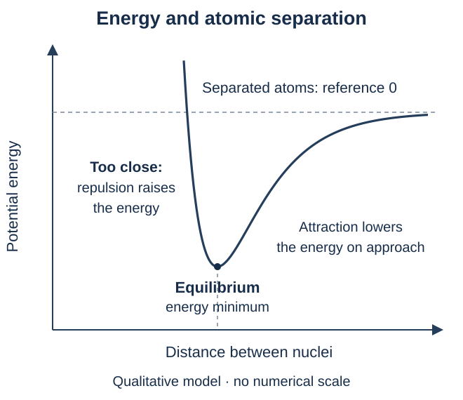
คำถาม 2 — อ่านกราฟก่อนท่องจำ
ก. ตำแหน่งใดบนกราฟเป็นระยะสมดุลของพันธะ และมีพลังงานสูงหรือต่ำกว่าอะตอมที่แยกห่างกันมาก?
ข. ถ้าบีบอะตอมให้ใกล้กว่าระยะสมดุลมาก พลังงานจะเปลี่ยนอย่างไร เพราะเหตุใด?
ค. การสร้างพันธะจากอะตอมที่แยกกันกับการสลายพันธะให้แยกจากกัน ขั้นใดคายและขั้นใดรับพลังงาน?
ก. ตำแหน่งพลังงานต่ำสุด เป็นระยะสมดุลและมีพลังงานต่ำกว่าศูนย์อ้างอิงของอะตอมที่แยกห่างมาก
ข. พลังงานสูงขึ้น เพราะแรงผลักมีผลเด่น ทั้งระหว่างนิวเคลียสกับนิวเคลียสและระหว่างอิเล็กตรอนกับอิเล็กตรอน จึงไม่ใช่ว่ายิ่งใกล้ยิ่งเสถียร
ค. สร้างพันธะคายพลังงาน ส่วนสลายพันธะต้องรับพลังงาน ต้องรวมทุกขั้นจึงจะตัดสินพลังงานสุทธิของปฏิกิริยาได้
3. คู่ร่วมพันธะ คู่โดดเดี่ยว และชนิดพันธะ
คู่ร่วมพันธะ ใช้ร่วมระหว่างสองอะตอม ส่วน คู่โดดเดี่ยว คืออิเล็กตรอนเวเลนซ์หนึ่งคู่ที่ไม่ได้ใช้ร่วมสร้างพันธะระหว่างอะตอม ในภาพลิวอิส จุด 1 จุดแทนอิเล็กตรอน 1 ตัว และเส้นพันธะ 1 เส้นแทนคู่ร่วม 1 คู่
สัญลักษณ์ที่ใช้เพิ่มคือ O = ออกซิเจน และ N = ไนโตรเจน พันธะเดี่ยว–คู่–สามใช้ร่วมกัน 1, 2, 3 คู่ ตามลำดับ ไม่ได้บอกจำนวนอะตอม
| ตัวอย่าง | คู่ร่วมพันธะและคู่โดดเดี่ยว |
|---|---|
| H2: H–H พันธะเดี่ยว | คู่ร่วม 1 คู่ (2 อิเล็กตรอน); ไม่มีคู่โดดเดี่ยว |
| O2: O=O พันธะคู่ | คู่ร่วม 2 คู่ (4 อิเล็กตรอน); O แต่ละอะตอมมีคู่โดดเดี่ยว 2 คู่ |
| N2: N≡N พันธะสาม | คู่ร่วม 3 คู่ (6 อิเล็กตรอน); N แต่ละอะตอมมีคู่โดดเดี่ยว 1 คู่ |
| H2O: พันธะ O–H เดี่ยว 2 พันธะ | คู่ร่วมรวม 2 คู่; O มีคู่โดดเดี่ยว 2 คู่ รวมเวเลนซ์อิเล็กตรอน 8 ตัวทั้งโมเลกุล: 4 ในพันธะ + 4 ในคู่โดดเดี่ยว |
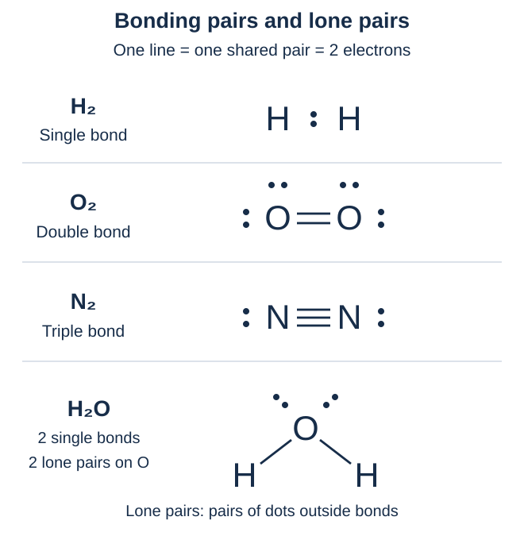
คำถาม 3 — นับคู่และนับอิเล็กตรอน
ก. H2, O2 และ N2 มีคู่ร่วมระหว่างอะตอมกี่คู่ และมีอิเล็กตรอนร่วมกี่ตัวตามลำดับ?
ข. O แต่ละอะตอมใน O2 และ N แต่ละอะตอมใน N2 มีคู่โดดเดี่ยวกี่คู่?
ค. วาดลิวอิส H2O ให้เห็นคู่โดดเดี่ยว แล้วนับคู่ร่วม คู่โดดเดี่ยว และเวเลนซ์อิเล็กตรอนรวมทั้งโมเลกุล
ก. ตามลำดับมี 1, 2, 3 คู่ หรือ 2, 4, 6 อิเล็กตรอน จึงเป็นพันธะเดี่ยว คู่ และสาม แต่ทุกโมเลกุลในข้อนี้ยังมีอะตอม 2 อะตอม
ข. O แต่ละอะตอมมี 2 คู่ ส่วน N แต่ละอะตอมมี 1 คู่ คู่โดดเดี่ยวเหล่านี้ไม่ได้เพิ่มจำนวนคู่ร่วมพันธะ
ค. O เชื่อม H สองอะตอมด้วยพันธะเดี่ยวและมีคู่โดดเดี่ยว 2 คู่ จึงมีคู่ร่วม 2 คู่ (4 อิเล็กตรอน) กับคู่โดดเดี่ยว 2 คู่ (4 อิเล็กตรอน) รวม 8 ตัวทั้งโมเลกุล
4. สูตรโมเลกุลกับสูตรอย่างง่าย
สูตรโมเลกุล บอกชนิดและจำนวนอะตอมจริงใน 1 โมเลกุล เลขห้อย 1 ไม่เขียน เช่น N2O4 มี N 2 อะตอมและ O 4 อะตอม ส่วน สูตรอย่างง่าย บอกอัตราส่วนจำนวนเต็มอย่างต่ำ จึงเป็น NO2 สำหรับสารตัวอย่างนี้ ไม่เปลี่ยนสูตรโมเลกุลเป็นสูตรอย่างง่ายเมื่อโจทย์ถามสูตรโมเลกุล
สัญลักษณ์ใหม่คือ C = คาร์บอน ตัวอย่างการย่ออัตราส่วน:
| สูตรโมเลกุล | สูตรอย่างง่าย |
|---|---|
| N2O4 | NO2: หารจำนวนอะตอมทั้งหมดด้วย 2 |
| H2O2 | HO: หารด้วย 2 เป็นอัตราส่วน H:O = 1:1 ไม่ได้แปลว่าโมเลกุลเดิมมีเพียง 2 อะตอม |
| C6H12O6 | CH2O: หารด้วย 6 |
เลขหน้าสูตรนับโมเลกุล เลขห้อยนับอะตอมในแต่ละโมเลกุล: เมื่ออ่านในระดับอนุภาค 2CO2 หมายถึง CO2 2 โมเลกุล รวม C 2 และ O 4 อะตอม สูตรโมเลกุลอย่างเดียวไม่ได้บอกการเชื่อมอะตอมหรือรูปร่างทั้งหมด ต้องดูโครงสร้างเพิ่ม
คำถาม 4 — คงจำนวนจริง แยกจากอัตราส่วน
ก. N2O4 1 โมเลกุลมี N และ O อย่างละกี่อะตอม? สูตรอย่างง่ายคืออะไร และใช้แทนสูตรโมเลกุลได้เลยหรือไม่?
ข. เมื่ออ่านในระดับอนุภาค 2CO2 หมายถึงกี่โมเลกุล รวม C กับ O อย่างละกี่อะตอม และเลข 2 สองตำแหน่งมีหน้าที่ต่างกันอย่างไร?
ค. สูตรโมเลกุลอย่างเดียวบอกได้หรือไม่ว่าอะตอมเชื่อมกันอย่างไรและโมเลกุลมีรูปร่างใด?
ก. มี N 2 และ O 4 อะตอม สูตรอย่างง่าย NO2 แสดงอัตราส่วน 1:2 แต่สูตรโมเลกุลต้องคง N2O4 เพื่อบอกจำนวนอะตอมจริง
ข. มี 2 โมเลกุล รวม C 2 และ O 4 อะตอม เลขหน้าสูตรนับโมเลกุล ส่วนเลขห้อย 2 นับ O ในแต่ละโมเลกุล ไม่ได้เปลี่ยนสูตรของแต่ละโมเลกุล
ค. โดยทั่วไปยังบอกไม่ได้ครบ สูตรโมเลกุลให้ชนิดกับจำนวนอะตอม ต้องใช้โครงสร้างและข้อมูลการจัดเรียงเพื่ออธิบายการเชื่อมกับรูปร่าง
5. เรียกชื่อสารโคเวเลนต์ธาตุคู่
สารประกอบธาตุคู่มีธาตุ 2 ชนิด ไม่จำเป็นต้องมีเพียง 2 อะตอม การเรียกชื่อแบบคำนำหน้าในหัวข้อนี้ใช้กับสารโมเลกุลธาตุคู่ทั่วไป อ่านธาตุตัวหน้าตามสูตรก่อน ตามด้วยธาตุตัวหลังที่เปลี่ยนท้ายชื่อเป็น –ไอด์ (–ide) เช่น oxide = ออกไซด์, chloride = คลอไรด์, fluoride = ฟลูออไรด์
| จำนวนอะตอม | คำนำหน้าไทย / อังกฤษ |
|---|---|
| 1 | มอนอ / mono- |
| 2 | ได / di- |
| 3 | ไตร / tri- |
| 4 | เตตระ / tetra- |
| 5 | เพนตะ / penta- |
| 6 | เฮกซะ / hexa- |
| 7 | เฮปตะ / hepta- |
| 8 | ออกตะ / octa- |
| 9 | โนนะ / nona- |
| 10 | เดคะ / deca- |
ตัวหน้า 1 อะตอมมักละ mono-; ตัวหลังยังระบุ mono- เมื่อมี 1 อะตอม เช่น CO เป็นคาร์บอนมอนอกไซด์ ส่วน CO2 เป็นคาร์บอนไดออกไซด์ รูปชื่อออกไซด์แบบย่อที่ใช้ในบทนี้คือ monoxide = มอนอกไซด์, tetroxide = เตตรอกไซด์ และ pentoxide = เพนตอกไซด์
สัญลักษณ์ที่ใช้เพิ่มคือ P = ฟอสฟอรัส, S = ซัลเฟอร์, Cl = คลอรีน และ F = ฟลูออรีน
| ธาตุตัวหลัง | ชื่อท้ายที่ใช้ |
|---|---|
| H — ไฮโดรเจน | ไฮไดรด์ (hydride) |
| N — ไนโตรเจน | ไนไตรด์ (nitride) |
| O — ออกซิเจน | ออกไซด์ (oxide) |
| S — ซัลเฟอร์ | ซัลไฟด์ (sulfide) |
| F — ฟลูออรีน | ฟลูออไรด์ (fluoride) |
| Cl — คลอรีน | คลอไรด์ (chloride) |
| Br — โบรมีน | โบรไมด์ (bromide) |
| I — ไอโอดีน | ไอโอไดด์ (iodide) |
| สูตร | ชื่อสาร |
|---|---|
| CO | คาร์บอนมอนอกไซด์ |
| CO2 | คาร์บอนไดออกไซด์ |
| N2O4 | ไดไนโตรเจนเตตรอกไซด์ |
| PCl3 | ฟอสฟอรัสไตรคลอไรด์ |
| SF6 | ซัลเฟอร์เฮกซะฟลูออไรด์ |
คำถาม 5 — อ่านจำนวนอะตอมจากสูตร
ก. เรียกชื่อ CO, CO2 และ N2O4 พร้อมอธิบายว่าทำไม CO ไม่อ่านมอนอหน้าคาร์บอน
ข. เรียกชื่อ PCl3 กับ SF6 และอธิบายว่า “ธาตุคู่” หมายถึงมีอะตอมทั้งหมดเพียง 2 อะตอมหรือไม่
ก. CO คาร์บอนมอนอกไซด์; CO2 คาร์บอนไดออกไซด์; N2O4 ไดไนโตรเจนเตตรอกไซด์ ธาตุตัวหน้ามี 1 อะตอมมักละ mono- แต่ตัวหลัง O 1 อะตอมยังระบุใน monoxide
ข. PCl3 ฟอสฟอรัสไตรคลอไรด์; SF6 ซัลเฟอร์เฮกซะฟลูออไรด์ ธาตุคู่หมายถึงธาตุ 2 ชนิด จึงมีจำนวนอะตอมรวมได้มากกว่า 2
6. เขียนสูตรจากชื่อและรู้จักชื่อเฉพาะ
แปลงชื่อ → สัญลักษณ์ธาตุ → จำนวนจากคำนำหน้า → เลขห้อย ถ้าไม่ระบุคำนำหน้าธาตุตัวแรกในระบบนี้ ให้ใช้ 1 อะตอม และไม่เขียนเลขห้อย 1 เช่น ซัลเฟอร์ไตรออกไซด์ให้ SO3; ไดไนโตรเจนเพนตอกไซด์ให้ N2O5 คงจำนวนตามชื่อ ไม่ย่อเป็นอัตราส่วนอย่างต่ำ และไม่ใช้การไขว้ประจุไอออนแทนข้อมูลชื่อ
บางสารนิยมใช้ชื่อเฉพาะ จึงต้องรู้ควบคู่กับกฎคำนำหน้า:
| สูตร | ชื่อที่ใช้บ่อย |
|---|---|
| H2O | น้ำ / water |
| NH3 | แอมโมเนีย / ammonia |
| CH4 | มีเทน / methane |
สถานะอาจทำให้ชื่อที่ใช้ต่างกัน: (g) คือแก๊ส และ (aq) คือสารที่อยู่ในสารละลายน้ำ HCl(g) เรียกไฮโดรเจนคลอไรด์ แต่ HCl(aq) เรียกกรดไฮโดรคลอริก การเรียกชื่อกรดมีหลักเฉพาะเพิ่มเติม
คำถาม 6 — แปลงชื่อกลับเป็นสูตร
ก. เขียนสูตรซัลเฟอร์ไตรออกไซด์และไดไนโตรเจนเพนตอกไซด์ พร้อมระบุจำนวนอะตอมของแต่ละธาตุ
ข. เขียนชื่อที่ใช้บ่อยของ H2O, NH3 และ CH4 ตามลำดับ
ค. HCl(g) กับ HCl(aq) ใช้ชื่อว่าอะไร และ (g) กับ (aq) บอกอะไร?
ก. SO3: S 1 และ O 3 อะตอม; N2O5: N 2 และ O 5 อะตอม คำนำหน้าระบุจำนวนอะตอมในโมเลกุล ไม่ใช่ประจุ
ข. น้ำ แอมโมเนีย และมีเทน ตามลำดับ ชื่อเฉพาะเหล่านี้ใช้ควบคู่กับระบบคำนำหน้า ไม่จำเป็นต้องฝืนเรียกทุกสารด้วยกฎเดียว
ค. HCl(g) คือไฮโดรเจนคลอไรด์ในสถานะแก๊ส; HCl(aq) คือกรดไฮโดรคลอริกในสารละลายน้ำ จึงต้องอ่านสถานะประกอบชื่อ
7. นับเวเลนซ์อิเล็กตรอนและเลือกโครงร่าง
โครงสร้างลิวอิส แสดงการเชื่อมอะตอมและเวเลนซ์อิเล็กตรอนด้วยเส้นพันธะกับจุด เริ่มจากหาจำนวนอิเล็กตรอนที่มีให้ใช้จริง โดยรวม จำนวนอะตอม × เวเลนซ์อิเล็กตรอนต่ออะตอม ของทุกธาตุ สำหรับอะตอมเป็นกลางที่ใช้ในรอบนี้:
| ธาตุ | เวเลนซ์อิเล็กตรอนต่ออะตอม |
|---|---|
| H ไฮโดรเจน | 1 |
| C คาร์บอน | 4 |
| N ไนโตรเจน | 5 |
| O ออกซิเจน | 6 |
| F ฟลูออรีน; Cl คลอรีน | 7 |
ตัวอย่าง NH3: 5 + 3 × 1 = 8 ตัว; CO2: 4 + 2 × 6 = 16 ตัว; HCN: 1 + 4 + 5 = 10 ตัว นับเฉพาะเวเลนซ์อิเล็กตรอน ไม่ใช่อิเล็กตรอนทุกชั้นของอะตอม
อะตอมกลาง คืออะตอมที่เชื่อมกับอะตอมอื่นในโครงร่างอย่างง่าย มักเลือกธาตุที่มี อิเล็กโทรเนกาติวิตี (ความสามารถดึงดูดอิเล็กตรอนร่วมพันธะ) ต่ำกว่า โดย H อยู่ปลายและสร้างพันธะเดี่ยว 1 พันธะ; F อยู่ปลาย ในตัวอย่างพื้นฐานนี้ CO2 ใช้ O–C–O, HCN ใช้ H–C–N และ OF2 ใช้ F–O–F กฎเลือกอะตอมกลางเป็นแนวทาง ต้องใช้ข้อมูลการเชื่อมอะตอมประกอบเมื่อมีหลายโครงร่างที่เป็นไปได้ ไม่ถือว่าธาตุที่เขียนก่อนต้องอยู่กลางเสมอ
คำถาม 7 — จัดบัญชีก่อนวาด
ก. นับเวเลนซ์อิเล็กตรอนรวมของ NH3, CO2 และ HCN พร้อมแสดงที่มาของแต่ละจำนวน
ข. เลือกอะตอมกลางและเขียนโครงร่างของ CO2 กับ HCN เหตุใดจึงไม่วาง H กลาง HCN?
ค. OF2 มีเวเลนซ์อิเล็กตรอนรวมกี่ตัว ใช้อะตอมใดเป็นกลาง และอิเล็กโทรเนกาติวิตีหมายถึงอะไร?
ก. NH3: 5 + 3 × 1 = 8; CO2: 4 + 2 × 6 = 16; HCN: 1 + 4 + 5 = 10 ตัว รวมเวเลนซ์อิเล็กตรอนจากอะตอมทุกตัว
ข. ทั้งสองใช้ C เป็นอะตอมกลาง: O–C–O และ H–C–N; H สร้างพันธะเดี่ยวเพียง 1 พันธะในตัวอย่างนี้ จึงอยู่ปลาย โครงร่างนี้ยังไม่ใช่ลิวอิสที่เติมอิเล็กตรอนครบ
ค. 6 + 2 × 7 = 20 ตัว ใช้ O เป็นกลางใน F–O–F เพราะ F ดึงดูดอิเล็กตรอนร่วมพันธะได้สูงกว่าและอยู่ปลายในตัวอย่างนี้ อิเล็กโทรเนกาติวิตีคือความสามารถดึงดูดอิเล็กตรอนร่วมพันธะ
8. เติมอิเล็กตรอนและปรับเป็นพันธะคู่–สาม
สำหรับตัวอย่างที่เป็นไปตามกฎออกเตตในรอบนี้ ใช้ขั้นตอนต่อจากบัญชีอิเล็กตรอน:
- เชื่อมโครงร่างด้วยพันธะเดี่ยว หักอิเล็กตรอน 2 ตัวต่อพันธะออกจากยอดรวม
- เติมคู่โดดเดี่ยวให้อะตอมปลายก่อน จนครบ 8 ตัวรอบอะตอม ยกเว้น H ซึ่งครบ 2 ตัวจากพันธะเดี่ยวแล้ว
- วางอิเล็กตรอนที่เหลือบนอะตอมกลาง แล้วตรวจว่าทุกอะตอมครบดูเอตหรือออกเตตตามกรณีหรือยัง
- ถ้าอะตอมกลางยังไม่ครบและใช้อิเล็กตรอนหมดแล้ว ย้ายคู่โดดเดี่ยวของอะตอมข้างเคียงมาเป็นคู่ร่วมเพิ่ม ให้เป็นพันธะคู่หรือสาม โดยไม่เติมอิเล็กตรอนใหม่
- ตรวจสองยอดแยกกัน: จำนวนจริงทั้งโครงสร้าง = อิเล็กตรอนในพันธะ + ในคู่โดดเดี่ยว ต้องเท่ากับยอดตั้งต้น; เมื่อตรวจรอบแต่ละอะตอม ให้นับอิเล็กตรอนร่วมเต็มทั้งคู่รอบอะตอมนั้น
เดินตัวอย่าง CO2: มี 16 ตัว → วางพันธะเดี่ยว 2 พันธะใช้ 4 เหลือ 12 → เติม O แต่ละตัว 3 คู่โดดเดี่ยวใช้ครบ 12 แต่ C มีเพียง 4 ตัวรอบตัว → ย้ายคู่โดดเดี่ยวจาก O ข้างละ 1 คู่มาเป็นคู่ร่วม ได้ O=C=O ที่ C ครบ 8 และ O แต่ละตัวเหลือคู่โดดเดี่ยว 2 คู่ รวมทั้งโครงสร้างยังมี 16 ตัว
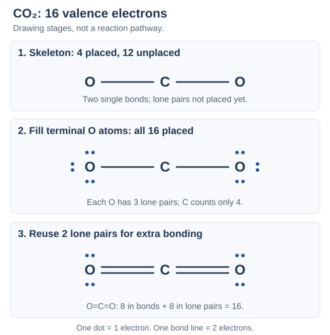
| ตัวอย่างเพิ่ม | ผลลัพธ์และการตรวจยอด |
|---|---|
| NH3: มี 8 ตัว | N–H เดี่ยว 3 พันธะใช้ 6; เหลือ 2 เป็นคู่โดดเดี่ยว 1 คู่บน N จึงมี 8 รอบ N และ 2 รอบแต่ละ H |
| HCN: มี 10 ตัว | เริ่ม H–C–N ใช้ 4; เติม 6 บน N แล้วย้าย 2 คู่มาเป็นคู่ร่วม ได้ H–C≡N โดย N เหลือคู่โดดเดี่ยว 1 คู่: 8 ในพันธะ + 2 ในคู่โดดเดี่ยว = 10 |
อย่าลืมวาดคู่โดดเดี่ยวในลิวอิสฉบับเต็ม และอย่าใช้ภาพบนกระดาษตัดสินรูปร่างสามมิติทันที ขั้นตอนนี้เป็นวิธีสำหรับตัวอย่างพื้นฐาน ไม่ใช่ข้อบังคับให้ทุกสารต้องครบ 8 ตัว
คำถาม 8 — วาดแล้วตรวจให้ครบสองยอด
ก. วาดลิวอิส NH3 ให้ครบทั้งพันธะและคู่โดดเดี่ยว แล้วตรวจจำนวนจริงทั้งโมเลกุลและจำนวนรอบ N
ข. วาดลิวอิส CO2 ระบุคู่โดดเดี่ยวบนแต่ละ O และอธิบายว่าทำไมจึงเติมอิเล็กตรอนใหม่ลงบน C ในโครงร่างพันธะเดี่ยวไม่ได้
ค. วาดลิวอิส HCN ให้ครบคู่โดดเดี่ยว ระบุชนิดพันธะ C–N และตรวจจำนวนจริงทั้งโมเลกุล
ก. N เป็นกลาง เชื่อม H 3 ตัวด้วยพันธะเดี่ยวและมีคู่โดดเดี่ยว 1 คู่ ทั้งโมเลกุลมี 3 × 2 + 2 = 8 ตัว; N นับได้ 6 จากพันธะ + 2 จากคู่โดดเดี่ยว = 8 ตัว แต่ละ H นับได้ 2 ตัว
ข. ได้ O=C=O โดย O แต่ละตัวมีคู่โดดเดี่ยว 2 คู่และ C ไม่มีคู่โดดเดี่ยว ทั้งโครงสร้างมี 8 ในพันธะ + 8 ในคู่โดดเดี่ยว = 16 ตัว เมื่อวางครบยอด 16 แล้วต้องย้ายคู่เดิมมาเป็นพันธะเพิ่ม การเติมใหม่จะทำให้เกินยอด
ค. ได้ H–C≡N โดย N มีคู่โดดเดี่ยว 1 คู่ C–N เป็นพันธะสาม H–C เป็นพันธะเดี่ยว รวม 2 + 6 + 2 = 10 ตัว C และ N ครบออกเตต ส่วน H ครบดูเอต
9. โครงสร้างลิวอิสของไอออนหลายอะตอม
ไอออนหลายอะตอม คือกลุ่มอะตอมที่มีประจุสุทธิ เริ่มนับอิเล็กตรอนเหมือนโมเลกุลแล้ว ประจุลบเพิ่มอิเล็กตรอน ประจุบวกลดอิเล็กตรอน ตามขนาดประจุ เช่น ประจุ 2− เพิ่ม 2 ตัว ส่วนประจุ 2+ ลด 2 ตัว จากนั้นเขียนพันธะและคู่โดดเดี่ยวตามขั้นตอนเดิม
| ไอออนและบัญชีอิเล็กตรอน | โครงสร้างที่ต้องได้ |
|---|---|
| NH4+ แอมโมเนียม: 5 + 4 × 1 − 1 = 8 | N เป็นกลาง มี N–H เดี่ยว 4 พันธะ ใช้ครบ 8 ตัว ไม่มีคู่โดดเดี่ยวบน N |
| OH− ไฮดรอกไซด์: 6 + 1 + 1 = 8 | O–H เดี่ยว 1 พันธะใช้ 2 ตัว; อีก 6 ตัวเป็นคู่โดดเดี่ยว 3 คู่บน O |
ครอบลิวอิสทั้งโครงสร้างด้วยวงเล็บเหลี่ยม แล้วเขียนประจุสุทธิเป็นตัวยกมุมขวานอกวงเล็บ เครื่องหมายนี้เป็นประจุของทั้งไอออน ไม่ใช่ประจุเดียวกันบนทุกอะตอม ภายในไอออนตัวอย่างยังมีพันธะโคเวเลนต์ การมีประจุไม่ได้เปลี่ยนเส้นพันธะภายในให้เป็นพันธะไอออนิก
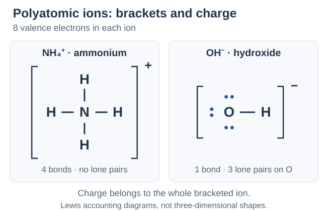
คำถาม 9 — ใส่ประจุในบัญชีและบนภาพ
ก. นับเวเลนซ์อิเล็กตรอนและวาดลิวอิส NH4+ ให้ครบวงเล็บกับประจุ ระบุจำนวนพันธะและคู่โดดเดี่ยวบน N
ข. นับเวเลนซ์อิเล็กตรอนและวาดลิวอิส OH− ให้ครบวงเล็บกับประจุ ระบุจำนวนคู่โดดเดี่ยวบน O
ค. ทำไม NH3 กับ NH4+ จึงมีเวเลนซ์อิเล็กตรอนรวมเท่ากัน และ + นอกวงเล็บของลิวอิส NH4+ บอกประจุของอะไร?
ก. 5 + 4 × 1 − 1 = 8 ตัว วาด N เชื่อม H 4 ตัวด้วยพันธะเดี่ยว ไม่มีคู่โดดเดี่ยวบน N ครอบทั้งภาพด้วยวงเล็บเหลี่ยมและเขียน + นอกวงเล็บมุมขวาบน N มี 8 รอบตัว ส่วน H แต่ละตัวมี 2
ข. 6 + 1 + 1 = 8 ตัว วาด O–H เดี่ยวและคู่โดดเดี่ยว 3 คู่บน O ครอบทั้งภาพด้วยวงเล็บเหลี่ยมและเขียน − นอกวงเล็บมุมขวาบน รวม 2 ในพันธะ + 6 ในคู่โดดเดี่ยว = 8
ค. NH3 มี 5 + 3 = 8 ส่วน NH4+ มี 5 + 4 − 1 = 8 ตัว เมื่อเพิ่ม H หนึ่งอะตอมในการนับแล้วลด 1 ตามประจุบวก ยอดจึงเท่ากัน เครื่องหมาย + บอกประจุสุทธิของทั้งไอออน ไม่ได้บอกว่า H ทุกอะตอมมีประจุ +
10. ประจุฟอร์มัลและการเลือกโครงสร้างลิวอิส
ประจุฟอร์มัล (formal charge, FC) เป็นค่าจัดบัญชีของแต่ละอะตอม โดยสมมติให้แบ่งอิเล็กตรอนในพันธะเท่ากันระหว่างสองอะตอม ไม่ใช่ประจุบางส่วนจริงที่เกิดจากการดึงดูดอิเล็กตรอนไม่เท่ากัน
FC = เวเลนซ์อิเล็กตรอนของอะตอมเป็นกลาง − อิเล็กตรอนที่ไม่ร่วมพันธะ − ½ × อิเล็กตรอนในพันธะ นับอิเล็กตรอน ไม่ใช่จำนวนคู่: คู่โดดเดี่ยว 1 คู่มี 2 ตัว และอิเล็กตรอนเดี่ยวที่ไม่ร่วมพันธะก็นับด้วย พันธะเดี่ยว–คู่–สามมี 2–4–6 ตัวตามลำดับ จึงใช้ทางลัดลบ จำนวนเส้นพันธะ แทนพจน์สุดท้ายได้ โดยพันธะคู่คิด 2 เส้น พันธะสามคิด 3 เส้น
| อะตอมในโครงสร้างที่ระบุ | คำนวณ FC และตรวจผลรวม |
|---|---|
| NH3: N มีพันธะเดี่ยว 3 และคู่โดดเดี่ยว 1 | N: 5 − 2 − 6/2 = 0; H แต่ละตัว: 1 − 0 − 2/2 = 0 รวม 0 |
| NH4+: N มีพันธะเดี่ยว 4 ไม่มีคู่โดดเดี่ยว | N: 5 − 0 − 8/2 = +1; H แต่ละตัว 0 รวม +1 |
| OH−: O มีพันธะเดี่ยว 1 และคู่โดดเดี่ยว 3 | O: 6 − 6 − 2/2 = −1; H: 0 รวม −1 |
| CO: C≡O และแต่ละอะตอมมีคู่โดดเดี่ยว 1 | C: 4 − 2 − 6/2 = −1; O: 6 − 2 − 6/2 = +1 รวม 0 แม้แต่ละอะตอมไม่เป็นศูนย์ |
ผลรวม FC ต้องเท่ากับประจุสุทธิ: โมเลกุลเป็นกลางรวม 0; ไอออนรวมเท่ากับประจุนอกวงเล็บ เมื่อเทียบโครงสร้างที่มีจำนวนอะตอมและอิเล็กตรอนถูกต้องแล้ว มักเลือกให้ FC มีขนาดเล็กและแยกประจุน้อย ถ้าการกระจายประจุใกล้เคียงกัน ให้ประจุลบอยู่บนธาตุที่มีอิเล็กโทรเนกาติวิตีสูงกว่า ทั้งนี้ต้องเคารพดูเอต/ออกเตตและข้อยกเว้นที่เหมาะกับธาตุ ไม่บังคับทุก FC เป็นศูนย์
ตัวอย่าง CO2: O=C=O มี FC ทุกอะตอมเป็น 0 จึงเป็นรูปเด่นกว่า O≡C–O ซึ่งมี FC ตามลำดับ +1, 0, −1 แม้ทั้งสองนับรวมได้ 0 และใช้อิเล็กตรอน 16 ตัวถูกต้อง การตรวจผลรวมอย่างเดียวจึงยังเลือกโครงสร้างไม่ได้
คำถาม 10 — คำนวณรายอะตอมแล้วรวม
ก. คำนวณ FC ของ N และ H ทุกตัวใน NH4+ และของ O กับ H ใน OH− โดยใช้โครงสร้างจากรอบก่อน
ข. สำหรับ CO ที่มี C≡O และคู่โดดเดี่ยวอะตอมละ 1 คู่ หา FC ของทั้งสองอะตอมและผลรวม โมเลกุลเป็นกลางจำเป็นต้องมี FC ทุกอะตอมเป็น 0 หรือไม่?
ค. เปรียบเทียบ O=C=O กับ O≡C–O โดยเติมคู่โดดเดี่ยวให้ครบออกเตต รูปใดเด่นกว่าเพราะอะไร และ FC ใช่ประจุบางส่วนจริงหรือไม่?
ก. NH4+: N = 5 − 0 − 8/2 = +1; H แต่ละตัว = 0 รวม +1 ส่วน OH−: O = 6 − 6 − 2/2 = −1; H = 0 รวม −1 ประจุสุทธิไม่ได้กระจายเป็นประจุเดียวกันบนทุกอะตอม
ข. C = 4 − 2 − 6/2 = −1; O = 6 − 2 − 6/2 = +1 รวม 0 จึงเป็นกลางได้แม้ FC รายอะตอมไม่เป็นศูนย์ ทั้ง C และ O ยังครบออกเตต
ค. รูปแรกมีคู่โดดเดี่ยว 2 คู่ต่อ O และ FC ทุกอะตอม 0 รูปหลังมีคู่โดดเดี่ยวบน O ที่พันธะสาม 1 คู่ และบน O ที่พันธะเดี่ยว 3 คู่ ให้ FC +1, 0, −1 จึงเลือกรูปแรกเป็นรูปเด่นเพราะแยกประจุน้อยกว่า FC เป็นค่าบัญชี ไม่ใช่ประจุบางส่วนจริง
11. เรโซแนนซ์: หลายรูปเขียนของโครงสร้างจริงเดียวกัน
รูปเรโซแนนซ์ มีตำแหน่งและการเชื่อมต่อของอะตอมเหมือนกัน จำนวนอิเล็กตรอนและประจุสุทธิเท่ากัน แต่จัดอิเล็กตรอนในพันธะกับคู่โดดเดี่ยวต่างกัน เชื่อมรูปด้วย ↔ ไม่ใช้เป็นลูกศรปฏิกิริยา → หรือสมดุล ⇌ โครงสร้างจริงเป็น เรโซแนนซ์ไฮบริด ที่อิเล็กตรอนกระจายครอบคลุมหลายอะตอม ไม่ใช่โมเลกุลสลับไปมาระหว่างรูปเขียน
NO2− (ไนไตรต์) มี 5 + 2 × 6 + 1 = 18 อิเล็กตรอน เขียนรูปหลักที่เทียบเท่ากันได้ 2 รูป แต่ละรูปมี N กลางที่มีคู่โดดเดี่ยว 1 คู่, N=O หนึ่งพันธะ และ N–O หนึ่งพันธะ O ที่พันธะคู่มีคู่โดดเดี่ยว 2 คู่และ FC = 0; O ที่พันธะเดี่ยวมี 3 คู่และ FC = −1; N มี FC = 0 รวม −1
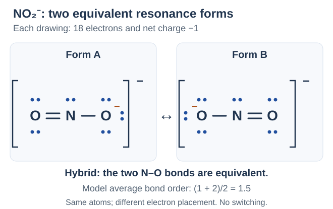
อันดับพันธะ ในรูปเขียนนับเป็น 1, 2, 3 สำหรับพันธะเดี่ยว คู่ สาม ถ้ารูปที่เทียบเท่ากันมีส่วนร่วมเท่ากัน ให้นับค่าเฉลี่ยจากรูปเหล่านั้น เช่น NO2−: (1 + 2)/2 = 1.5 ต่อ N–O เป็นค่าของแบบจำลอง ไม่ได้มีพันธะหนึ่งเดี่ยวและอีกหนึ่งคู่ค้างแยกกัน รูปที่ไม่เทียบเท่ากันไม่จำเป็นต้องมีส่วนร่วมเท่ากัน
| ตัวอย่างรูปหลักที่เทียบเท่ากัน | จำนวนรูปและอันดับพันธะเฉลี่ยในแบบจำลอง |
|---|---|
| O3 โอโซน: 18 อิเล็กตรอน; O กลางมีคู่โดดเดี่ยว 1 คู่และ FC +1, O ปลายพันธะเดี่ยวมี FC −1, อีกปลาย 0 รวม 0 | 2 รูป; O–O แต่ละพันธะเฉลี่ย (1 + 2)/2 = 1.5 |
| CO32− คาร์บอเนต: 24 อิเล็กตรอน; แต่ละรูปมี C=O หนึ่งพันธะและ C–O สองพันธะ, C ไม่มีคู่โดดเดี่ยวและ FC 0; O พันธะคู่มี 2 คู่โดดเดี่ยวและ FC 0; O พันธะเดี่ยวแต่ละตัวมี 3 คู่และ FC −1 รวม −2 | 3 รูป; C–O แต่ละพันธะเฉลี่ย (2 + 1 + 1)/3 = 4/3 |
คำถาม 11 — คงอะตอม เปลี่ยนการจัดอิเล็กตรอน
ก. วาดรูปเรโซแนนซ์หลัก 2 รูปของ NO2− ให้ครบคู่โดดเดี่ยว วงเล็บ และประจุ พร้อมระบุ FC รายอะตอมและจำนวนอิเล็กตรอนรวม
ข. NO2− จริงสลับระหว่างพันธะเดี่ยวกับพันธะคู่หรือไม่? หาอันดับพันธะเฉลี่ยต่อ N–O และอธิบาย ↔
ค. O3 กับ CO32− มีรูปหลักที่เทียบเท่ากันกี่รูป อันดับพันธะเฉลี่ยต่อ O–O หรือ C–O เท่าใด และผลรวม FC ของแต่ละสารต้องเป็นเท่าใด?
ก. มี 18 ตัว เขียน [O=N–O]− ↔ [O–N=O]− โดยทุกภาพ N มีคู่โดดเดี่ยว 1 คู่; O พันธะคู่มี 2 คู่และ FC 0; O พันธะเดี่ยวมี 3 คู่และ FC −1 ส่วน N มี FC 0 ทั้งสองรูปใช้การเชื่อม O–N–O เดิมและรวมประจุ −1
ข. โครงสร้างจริงเป็นไฮบริด ไม่สลับไปมาระหว่างสองรูป พันธะ N–O ทั้งสองเทียบเท่ากัน มีอันดับเฉลี่ย (1 + 2)/2 = 1.5 ในแบบจำลอง ↔ เชื่อมรูปเรโซแนนซ์ ไม่ใช่สมดุลระหว่างสารต่างชนิด
ค. O3: 2 รูป อันดับเฉลี่ย 1.5 และรวม FC 0; CO32−: 3 รูป อันดับเฉลี่ย 4/3 และรวม FC −2 การย้ายตำแหน่งพันธะคู่ในรูปเขียนไม่ย้ายอะตอมหรือเปลี่ยนประจุสุทธิ
12. พันธะโคออร์ดิเนต: คู่ร่วมเริ่มจากผู้ให้ฝ่ายเดียว
พันธะโคออร์ดิเนตโคเวเลนต์ เกิดเมื่ออิเล็กตรอนทั้ง 2 ตัวของคู่ร่วมที่สร้างใหม่มาจากอะตอมผู้ให้คู่เดียวกัน ผู้ให้มีคู่โดดเดี่ยว ส่วนผู้รับมีออร์บิทัลว่างที่รับคู่นั้นได้ ลูกศร ผู้ให้ → ผู้รับ ใช้บอกที่มาของคู่ ไม่ได้แปลว่าให้อิเล็กตรอนขาดไปเป็นการถ่ายโอนแบบไอออนิก
NH3 + H+ → NH4+: N ในแอมโมเนียให้คู่โดดเดี่ยวแก่ H+ ซึ่งไม่มีอิเล็กตรอนและมีออร์บิทัลว่าง เขียนทิศเป็น N → H คู่เดิมบน N กลายเป็นคู่ร่วม N–H ใหม่ ทั้งระบบยังมีเวเลนซ์อิเล็กตรอน 8 ตัว ผลิตภัณฑ์มีพันธะเดี่ยว 4 พันธะ ไม่มีคู่โดดเดี่ยวบน N
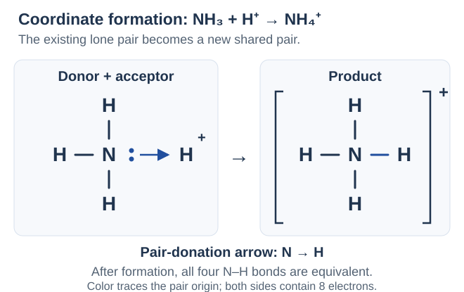
อีกตัวอย่าง: B คือโบรอน มีเวเลนซ์อิเล็กตรอน 3 ตัว ใน BF3 ที่เขียนพันธะ B–F เดี่ยว 3 พันธะ B มีเพียง 6 ตัวรอบตัว จึงรับคู่จาก N ใน NH3 ได้ เกิดสารประกอบเติมที่เขียนย่อ H3N→BF3 โดยลูกศร N → B และ B นับได้ 8 ตัวรอบตัว อะตอม F แต่ละตัวคงคู่โดดเดี่ยว 3 คู่
คำถาม 12 — ให้คู่จากใคร รับคู่ที่ใด
ก. ใน NH3 + H+ → NH4+ ระบุผู้ให้ ผู้รับ ทิศลูกศร และที่มาของอิเล็กตรอนทั้ง 2 ตัวในพันธะใหม่
ข. ใน H3N→BF3 อะตอมใดให้และรับคู่? B มีอิเล็กตรอนรอบตัวก่อนและหลังรับคู่เท่าใด?
ค. หลังเกิด NH4+ แล้ว พันธะ N–H ทั้ง 4 เทียบเท่ากันหรือไม่ และทั้งไอออนมีเวเลนซ์อิเล็กตรอนกี่ตัว?
ก. ผู้ให้คือ N ในแอมโมเนีย ผู้รับคือ H+ ลูกศร N → H อิเล็กตรอนทั้ง 2 ตัวมาจากคู่โดดเดี่ยวเดิมบน N แล้วกลายเป็นคู่ร่วมในพันธะใหม่ ไม่ใช่อิเล็กตรอนสร้างเพิ่ม
ข. N ให้คู่โดดเดี่ยวแก่ B ลูกศร N → B เดิม B มี B–F เดี่ยว 3 พันธะจึงนับได้ 6 ตัว เมื่อเพิ่มพันธะ N–B อีกหนึ่งคู่จึงนับได้ 8 ตัว โดย N เปลี่ยนจาก 3 พันธะกับ 1 คู่โดดเดี่ยวเป็น 4 พันธะ
ค. ทั้ง 4 พันธะเทียบเท่ากัน มีอิเล็กตรอนรวม 8 ตัว คำว่าโคออร์ดิเนตอธิบายที่มาของคู่ตอนสร้างพันธะ ไม่ทำให้เส้นหนึ่งมีความต่างถาวรจากอีกสามเส้น
13. ข้อยกเว้นกฎออกเตต
กฎออกเตตเป็นแนวทางสำคัญ ไม่ใช่เงื่อนไขที่ต้องบังคับทุกสารให้ครบ 8 ตัว H ใช้ดูเอต 2 ตัวอยู่แล้ว สัญลักษณ์ใหม่คือ Be = เบริลเลียม มีเวเลนซ์อิเล็กตรอน 2 ตัว ส่วน B โบรอนมี 3, P ฟอสฟอรัสมี 5 และ S ซัลเฟอร์มี 6 สำหรับอะตอมเป็นกลาง
| กลุ่มข้อยกเว้น | ตัวอย่างและการนับในลิวอิส |
|---|---|
| อิเล็กตรอนรอบอะตอมกลางน้อยกว่า 8 | BeH2: รวม 2 + 2 × 1 = 4 ตัว; H–Be–H มี 4 รอบ Be ในแบบจำลองโมเลกุลนี้ ส่วน BF3: รวม 3 + 3 × 7 = 24 ตัว; B–F เดี่ยว 3 พันธะให้ 6 รอบ B และ F แต่ละตัวมีคู่โดดเดี่ยว 3 คู่ ไม่ฝืนเพิ่มพันธะคู่เพียงเพื่อให้ B ครบ 8 |
| เวเลนซ์อิเล็กตรอนรวมเป็นจำนวนคี่ | NO: 5 + 6 = 11 ตัว จึงมีอิเล็กตรอนไม่เข้าคู่ รูปลิวอิส N=O มีคู่โดดเดี่ยว 1 คู่กับอิเล็กตรอนเดี่ยว 1 ตัวบน N และคู่โดดเดี่ยว 2 คู่บน O; N นับได้ 7 รอบตัว ส่วน O ได้ 8 ไม่เติมตัวที่ 12 เอง |
| ขยายออกเตต: รอบอะตอมกลางมากกว่า 8 | ในแบบจำลองโมเลกุล PCl5: รวม 5 + 5 × 7 = 40 ตัว มี P–Cl เดี่ยว 5 พันธะจึงนับ 10 รอบ P; SF6: รวม 6 + 6 × 7 = 48 ตัว มี S–F เดี่ยว 6 พันธะจึงนับ 12 รอบ S ทั้งสองไม่มีคู่โดดเดี่ยวบนอะตอมกลาง ส่วน Cl หรือ F ปลายแต่ละตัวมี 3 คู่ |
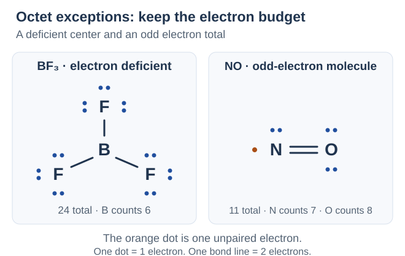
C, N, O และ F ซึ่งอยู่คาบ 2 ไม่ขยายออกเตต ส่วนธาตุคาบ 3 ขึ้นไปบางชนิดมีโครงสร้างลิวอิสที่นับรอบอะตอมกลางเกิน 8 ได้ ไม่ได้หมายความว่าทุกสารของธาตุเหล่านั้นต้องเกิน 8 ตรวจชนิดธาตุ ยอดอิเล็กตรอน และ FC ร่วมกันเสมอ
คำถาม 13 — แยกน้อยกว่า คี่ และมากกว่าแปด
ก. จัด BeH2 กับ BF3 เข้ากลุ่มข้อยกเว้น และระบุยอดเวเลนซ์อิเล็กตรอนรวมกับจำนวนรอบอะตอมกลาง
ข. วาดลิวอิส NO ให้ครบอิเล็กตรอนเดี่ยว แล้วนับจำนวนรวมและจำนวนรอบ N กับ O เหตุใดจึงทำให้ทุกอะตอมครบ 8 ไม่ได้?
ค. PCl5 กับ SF6 มีเวเลนซ์อิเล็กตรอนรวมและจำนวนรอบอะตอมกลางเท่าใด? ใช้ข้อยกเว้นนี้ให้ N หรือ O คาบ 2 มีเกิน 8 ได้หรือไม่?
ก. ทั้งคู่เป็นกลุ่มรอบอะตอมกลางน้อยกว่า 8: BeH2 รวม 4 และมี 4 รอบ Be ในแบบจำลองโมเลกุล; BF3 รวม 24 และมี 6 รอบ B โดย F แต่ละตัวมีคู่โดดเดี่ยว 3 คู่
ข. NO มี 11 ตัว: N=O, N มีคู่โดดเดี่ยว 1 คู่กับเดี่ยว 1 ตัว; O มีคู่โดดเดี่ยว 2 คู่ จึงนับรอบ N ได้ 7 และ O ได้ 8 ยอดรวมเป็นคี่จึงไม่สามารถจัดอิเล็กตรอนทั้งหมดเป็นคู่ให้ทั้งสองครบออกเตตโดยไม่เปลี่ยนยอด
ค. PCl5 รวม 40 และมี 10 รอบ P; SF6 รวม 48 และมี 12 รอบ S เป็นลิวอิสแบบขยายออกเตต แต่ใช้ขยายออกเตตให้ N หรือ O คาบ 2 ไม่ได้
14. ความยาวพันธะกับความแข็งแรง
ความยาวพันธะ คือระยะระหว่างนิวเคลียสของอะตอมที่เกิดพันธะ ณ ระยะสมดุล ใช้หน่วยเช่น พิโกเมตร (pm) โดย 1 pm = 10−12 m สัมพันธ์กับตำแหน่งพลังงานต่ำสุดในกราฟรอบแรก ไม่ใช่ระยะที่อะตอมเข้าชิดกันที่สุด
เมื่อเปรียบเทียบ ชนิดอะตอมเดียวกันและสภาพแวดล้อมใกล้เคียงกัน โดยทั่วไปพันธะสามสั้นและแข็งแรงกว่าพันธะคู่ และพันธะคู่สั้นและแข็งแรงกว่าพันธะเดี่ยว แข็งแรงในที่นี้หมายถึงต้องใช้พลังงานสลายมากกว่า ไม่จัดพันธะต่างชนิดทั้งหมดจากความยาวอย่างเดียว
| พันธะระหว่าง C กับ C | ตัวอย่างค่าเฉลี่ยจากชุดข้อมูลที่ใช้ในรอบนี้ |
|---|---|
| C–C พันธะเดี่ยว | ความยาว 154 pm; พลังงานสลาย 345 kJ ต่อโมลพันธะ |
| C=C พันธะคู่ | ความยาว 134 pm; พลังงานสลาย 611 kJ ต่อโมลพันธะ |
| C≡C พันธะสาม | ความยาว 120 pm; พลังงานสลาย 837 kJ ต่อโมลพันธะ |
พันธะสามไม่ใช่พันธะเดี่ยวแยกกัน 3 พันธะ: เป็นพันธะระหว่างอะตอมคู่เดิมที่มีคู่ร่วม 3 คู่ พลังงานจึงไม่จำเป็นต้องเป็น 3 เท่าของพันธะเดี่ยว เช่น 837 ไม่เท่ากับ 3 × 345 ส่วนกรณีเรโซแนนซ์ พันธะที่เทียบเท่ากันมีความยาวเท่ากัน และอาจมีความยาวอยู่ระหว่างค่าพันธะเดี่ยวกับคู่
คำถาม 14 — เทียบให้ถูกคู่ก่อนเรียง
ก. ความยาวพันธะวัดระหว่างจุดใด ในภาวะใด และ 1 pm เท่ากับกี่เมตร?
ข. เรียง C–C, C=C และ C≡C จากยาวไปสั้น แล้วเรียงพลังงานสลายจากน้อยไปมากโดยใช้ตาราง
ค. พลังงานสลาย C≡C ต้องเท่ากับ 3 เท่าของ C–C หรือไม่ และนำกฎสั้นกว่า–แข็งแรงกว่าไปจัดพันธะทุกชนิดโดยไม่ดูชนิดอะตอมได้หรือไม่?
ก. วัดระหว่างนิวเคลียสของอะตอมคู่ที่เกิดพันธะ ณ ระยะสมดุล ซึ่งสัมพันธ์กับพลังงานต่ำสุด; 1 pm = 10−12 m
ข. ยาวไปสั้น: C–C (154 pm) > C=C (134 pm) > C≡C (120 pm); พลังงานน้อยไปมาก: C–C (345) < C=C (611) < C≡C (837 kJ ต่อโมลพันธะ) ในชุดข้อมูลนี้
ค. ไม่จำเป็น: 3 × 345 = 1035 ซึ่งไม่เท่ากับ 837 kJ ต่อโมลพันธะ พันธะสามคือคู่ร่วม 3 คู่ระหว่างอะตอมคู่เดียว การเทียบแนวโน้มต้องคุมชนิดอะตอมและสภาพแวดล้อม ไม่ใช้ความยาวอย่างเดียวจัดพลังงานพันธะทุกชนิด
15. พลังงานสลายพันธะกับพลังงานพันธะเฉลี่ย
ในรอบนี้ D แทนพลังงานสลายพันธะในสถานะแก๊สแบบแบ่งอิเล็กตรอนในคู่ร่วมไปฝ่ายละ 1 ตัว ใช้หน่วย kJ mol−1 หรือกิโลจูลต่อโมลพันธะที่สลาย ค่า D ในตารางเป็นบวก และยิ่งมากยิ่งสลายยาก ตัวอย่าง H2(g) → 2H(g) ใช้ 436 kJ ต่อ H2 1 mol หรือ H–H 1 mol; กระบวนการย้อนกลับสร้างพันธะเดียวกันคาย 436 kJ
ค่าสลายเฉพาะพันธะ ระบุพันธะในอนุภาคและขั้นที่กำหนด ส่วน พลังงานพันธะเฉลี่ย เฉลี่ยจากพันธะชนิดนั้นในหลายสภาพแวดล้อม หรือจากการสลายทีละขั้นที่ระบุ จึงใช้ประมาณค่า ไม่ใช่ค่าตรงของทุกโมเลกุล ตัวอย่างการสลาย CH4(g) → C(g) + 4H(g) ใช้รวมประมาณ 1660 kJ ต่อ CH4 1 mol ให้ค่าเฉลี่ย C–H = 1660/4 = 415 kJ mol−1 แต่การสลาย C–H ขั้นแรกมีค่าประมาณ 439 การตัดแต่ละครั้งทำให้ชนิดอนุภาคเปลี่ยน จึงไม่จำเป็นต้องมีค่าสลายทีละขั้นเท่ากัน
| พันธะ | D ที่ใช้คำนวณในรอบนี้ (kJ mol−1) |
|---|---|
| H–H | 436 |
| Cl–Cl | 243 |
| H–Cl | 432 |
| C–H | 415 |
| N–H | 390 |
| N≡N | 946 |
ใช้ร่วมกับค่า C–C, C=C และ C≡C ในหัวข้อก่อน ค่าเฉลี่ยอาจต่างกันระหว่างตาราง ยึดค่าที่โจทย์กำหนดและใช้ชุดเดียวกันในแต่ละข้อ หนึ่งโมล CH4 มี C–H 4 mol จึงต้องคูณจำนวนพันธะด้วย
การเดือดไม่ใช่การสลาย O–H: (l) คือของเหลว และ (g) คือแก๊ส ใน H2O(l) → H2O(g) โมเลกุลน้ำยังคงเดิม เป็นการเอาชนะแรงยึดเหนี่ยวระหว่างโมเลกุล จึงใช้ค่าพลังงานสลาย O–H แทนความร้อนกลายเป็นไอไม่ได้
คำถาม 15 — แยกหนึ่งโมลพันธะจากหนึ่งโมลสาร
ก. D(H–H) = 436 kJ mol−1 หมายถึงการสลายแบบใด ในสถานะใด? ถ้าสลาย H2 2 mol ต้องใช้พลังงานเท่าใด และกระบวนการย้อนกลับรับหรือคาย?
ข. ถ้าสลาย CH4(g) 1 mol เป็นอะตอมแก๊สหมดใช้ 1660 kJ จงหาพลังงาน C–H เฉลี่ย และอธิบายว่าทำไมไม่ใช่หลักฐานว่าทุกขั้นสลายใช้เท่ากัน
ค. น้ำเดือดต้องตัด O–H ในทุกโมเลกุลหรือไม่ และใช้ D(O–H) แทนความร้อนกลายเป็นไอได้หรือไม่?
ก. หมายถึงสลาย H–H ในแก๊สให้ H แต่ละอะตอมรับอิเล็กตรอนจากคู่ร่วมไป 1 ตัว H2 2 mol มี H–H 2 mol จึงใช้ 2 × 436 = 872 kJ กระบวนการย้อนกลับจากอะตอมแก๊สสร้าง H–H จะคายพลังงานเท่ากัน
ข. มี C–H 4 mol จึงเฉลี่ย 1660/4 = 415 kJ mol−1 เป็นค่าเฉลี่ยของการสลายทั้งหมด ไม่ใช่ค่าสลายเฉพาะทุกขั้น หลังตัดพันธะแต่ละครั้งอนุภาคที่เหลือเปลี่ยนไป แม้ C–H ทั้งสี่เทียบเท่ากันในโมเลกุลตั้งต้น
ค. ไม่ต้องตัด O–H โมเลกุลน้ำยังเป็นน้ำ การกลายเป็นไอเอาชนะแรงยึดเหนี่ยวระหว่างโมเลกุล จึงใช้ D(O–H) ซึ่งเป็นการสลายพันธะภายในโมเลกุลแทนไม่ได้
16. นับพันธะและประมาณการเปลี่ยนแปลงเอนทัลปี
ΔH อ่านว่าเดลตาเอช หมายถึงการเปลี่ยนแปลงเอนทัลปีของระบบ สำหรับปฏิกิริยาที่ความดันคงที่และมีแต่งานขยายตัว–หดตัว ค่านี้เท่ากับความร้อนที่ระบบรับ ΔH < 0 คายความร้อน; ΔH > 0 ดูดความร้อน ส่วน Σ หมายถึงผลรวม เมื่อใช้ค่า D ซึ่งเป็นบวกทั้งสองฝั่ง:
ΔH ≈ ΣD(พันธะที่สลาย) − ΣD(พันธะที่สร้าง) โดยแต่ละพจน์ต้องคูณจำนวนโมลพันธะจากสัมประสิทธิ์สมการที่ดุลแล้ว เครื่องหมาย ≈ ใช้เพราะค่าพลังงานพันธะหลายชนิดเป็นค่าเฉลี่ย สูตรนี้คิดผ่านการสลายสารตั้งต้นเป็นอะตอมแก๊สแล้วสร้างผลิตภัณฑ์ ไม่ได้บอกกลไกปฏิกิริยาจริง
- ดุลสมการและระบุสถานะ แล้วเขียนโครงสร้างให้เห็นชนิดพันธะ
- นับพันธะต่อโมเลกุลและคูณสัมประสิทธิ์; C=C 1 ตำแหน่งใช้ D(C=C) 1 ครั้ง ไม่ใช้ 2D(C–C)
- รวมพลังงานที่ใช้สลาย ลบขนาดพลังงานที่คายตอนสร้าง แล้วแปลเครื่องหมายตามสมการที่เขียน
ตัวอย่าง H2(g) + Cl2(g) → 2HCl(g): สลาย H–H 1 และ Cl–Cl 1 mol ใช้ 436 + 243 = 679 kJ; สร้าง H–Cl 2 mol คายขนาด 2 × 432 = 864 kJ ดังนั้น ΔH ≈ 679 − 864 = −185 kJ ต่อปฏิกิริยาตามสมการ (ผลิต HCl 2 mol) หรือ −92.5 kJ ต่อ HCl 1 mol
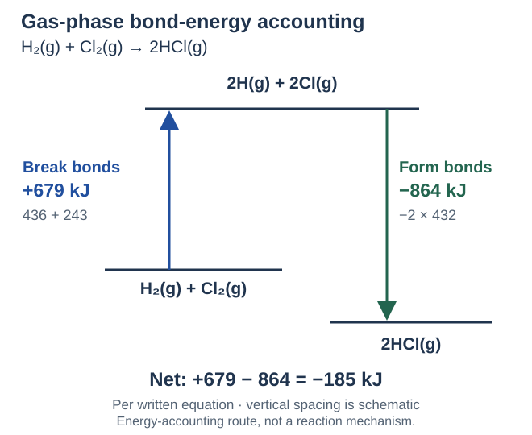
กลับสมการให้กลับเครื่องหมาย; คูณสมการให้คูณ ΔH ตาม เช่น ย้อนสมการตัวอย่างได้ +185 kJ และคูณสมการเดิมด้วย 2 ได้ −370 kJ วิธีใช้ค่า D โดยตรงใช้กับสารแก๊ส ถ้าโจทย์มีของเหลวหรือของแข็งต้องรวมเอนทัลปีเปลี่ยนสถานะหรือการละลายที่เกี่ยวข้อง จึงไม่ถือว่า HCl(aq) หรือ H2O(l) ให้ผลเดียวกับแก๊สโดยอัตโนมัติ
คำถาม 16 — สลายลบสร้างตามสมการที่ดุล
ก. เขียนสูตรประมาณ ΔH จาก D อธิบาย Σ และระบุว่าเครื่องหมายใดคายหรือดูดความร้อน
ข. สำหรับ H2(g) + Cl2(g) → 2HCl(g) ให้นับโมลพันธะที่สลายกับสร้าง คำนวณ ΔH และพลังงานต่อ HCl 1 mol ด้วยตารางในรอบนี้
ค. ใช้ผลตัวอย่างหา ΔH ของ 2HCl(g) → H2(g) + Cl2(g) และของ 2H2(g) + 2Cl2(g) → 4HCl(g) พร้อมระบุว่าคายหรือดูด
ก. ΔH ≈ ΣD(สลาย) − ΣD(สร้าง), Σ คือผลรวม และต้องคูณจำนวนโมลพันธะ ค่า ΔH ลบหมายถึงคาย บวกหมายถึงดูด โดยใช้ค่า D บวกจากตารางทั้งสองฝั่ง
ข. สลาย H–H 1 และ Cl–Cl 1 mol; สร้าง H–Cl 2 mol ได้ (436 + 243) − 2 × 432 = −185 kJ ตามสมการ คาย 185 kJ เมื่อได้ HCl 2 mol หรือ ΔH = −92.5 kJ ต่อ HCl 1 mol
ค. สมการย้อนกลับ: +185 kJ ดูดความร้อน สมการเดิมคูณ 2: 2 × (−185) = −370 kJ คายความร้อน ต้องผูกค่ากับสัมประสิทธิ์และทิศสมการ ไม่ใช้ −185 เหมือนกันทุกสมการ
17. หลายพันธะ การตัดพจน์ซ้ำ และย้อนหาค่า D
ตัวอย่าง C2H4(g) + H2(g) → C2H6(g): เอทีนมี C=C 1 กับ C–H 4 พันธะ เอเทนมี C–C 1 กับ C–H 6 พันธะ เขียนบัญชีเต็มได้:
ΔH ≈ [611 + 4 × 415 + 436] − [345 + 6 × 415] = 2707 − 2835 = −128 kJ ตามสมการในชุดข้อมูลนี้ หรือหักพจน์ C–H ที่นับด้วยค่าเฉลี่ยเดียวกัน 4 ชุดทั้งสองฝั่ง เหลือ [611 + 436] − [345 + 2 × 415] = −128 kJ ตรงกัน การตัดพจน์เป็นทางลัดทางบัญชี ไม่ได้ยืนยันกลไกการแตกพันธะจริง และห้ามตัดพันธะคนละชนิดเพียงเพราะเชื่อมธาตุเดียวกัน
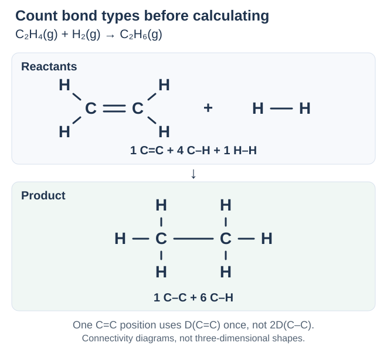
| สิ่งที่ตรวจ | หลักใช้คำนวณ |
|---|---|
| สารหลายโมเลกุลและพันธะหลายชนิด | N2(g) + 3H2(g) → 2NH3(g): สลาย N≡N 1 กับ H–H 3 mol; สร้าง N–H 6 mol จึงใช้ D(N≡N) ครั้งเดียว ไม่คูณ 3 ซ้ำจากจำนวนเส้น |
| มี D ที่ยังไม่ทราบ | นับพันธะและตั้งสมการ ΔH ตามปกติก่อน แล้วจัดสมการหาค่านั้น ต้องเก็บเครื่องหมาย ΔH และตัวคูณจำนวนพันธะให้ครบ |
ผลจากค่าเฉลี่ยเป็นค่าประมาณ ควรระบุชุดข้อมูล สถานะ และฐานปริมาณสารทุกครั้ง พลังงานสุทธิคายหรือดูดไม่ได้บอกอัตราเร็วปฏิกิริยาโดยตัวมันเอง
คำถาม 17 — นับครบก่อนย่อหรือจัดสมการ
ก. คำนวณ ΔH ของ C2H4(g) + H2(g) → C2H6(g) ด้วยบัญชีพันธะเต็มและวิธีตัดพจน์ซ้ำ โดยใช้ตารางรอบนี้
ข. หา ΔH ของ N2(g) + 3H2(g) → 2NH3(g) จากตาราง และหา ΔH ต่อการผลิต NH3 1 mol
ค. กำหนด ΔH = −185 kJ สำหรับ H2(g) + Cl2(g) → 2HCl(g), D(H–H) = 436 และ D(Cl–Cl) = 243 kJ mol−1 จงย้อนหา D(H–Cl)
ก. เต็ม: [611 + 4 × 415 + 436] − [345 + 6 × 415] = −128 kJ ตัด C–H 4 ชุดที่ใช้ค่าเดียวกันทั้งสองฝั่ง: [611 + 436] − [345 + 2 × 415] = −128 kJ ทั้งสองวิธีคายเท่ากันตามสมการในแบบจำลองค่าเฉลี่ย
ข. สลาย N≡N 1 กับ H–H 3 mol และสร้าง N–H 6 mol: [946 + 3 × 436] − 6 × 390 = 2254 − 2340 = −86 kJ ตามสมการ ได้ NH3 2 mol จึงมี ΔH ≈ −43 kJ ต่อ NH3 1 mol จากชุดค่าเฉลี่ยนี้
ค. ตั้ง −185 = 436 + 243 − 2D(H–Cl) จึงได้ 2D(H–Cl) = 679 + 185 = 864 และ D(H–Cl) = 432 kJ mol−1 ค่า D เป็นบวก แม้ ΔH ของปฏิกิริยาเป็นลบ
18. VSEPR และการนับโดเมนอิเล็กตรอน
VSEPR ย่อจาก Valence Shell Electron Pair Repulsion เป็นแบบจำลองการผลักระหว่างคู่อิเล็กตรอนในวงเวเลนซ์ ใช้ลิวอิสทำนายการจัดตัวรอบอะตอมกลาง โดยบริเวณที่มีความหนาแน่นอิเล็กตรอนสูงจัดให้อยู่ห่างกันเพื่อลดแรงผลักในสามมิติ
โดเมนอิเล็กตรอน คือบริเวณอิเล็กตรอนหนึ่งทิศทางรอบอะตอมกลาง: พันธะเดี่ยว คู่ หรือสามที่เชื่อมอะตอมคู่เดียวกันนับ 1 โดเมน ส่วนคู่โดดเดี่ยวบนอะตอมกลางแต่ละคู่นับ 1 โดเมน ไม่ใช่การนับจำนวนอิเล็กตรอนหรือจำนวนเส้นทั้งหมด และไม่นำคู่โดดเดี่ยวบนอะตอมปลายมาบวกกับโดเมนของอะตอมกลาง การนับพันธะหลายเส้นเป็นโดเมนเดียวไม่ได้แปลว่าแรงผลักของทุกโดเมนต้องเท่ากัน
สัญลักษณ์แบบ AXnEm: สำหรับตัวอย่างที่ไม่มีอิเล็กตรอนเดี่ยวในหัวข้อนี้ A แทนอะตอมกลาง; X แทนอะตอมที่เชื่อมกับ A โดยตรง ซึ่งอาจต่างชนิดกันได้; E แทนคู่โดดเดี่ยวบน A ตัวเลข n คือจำนวน X และ m คือจำนวนคู่โดดเดี่ยว จึงมี โดเมนรวม = n + m ถ้า m = 1 มักเขียน E โดยละเลข 1; ถ้า m = 0 มักละ E0 เช่น AX2 แทน AX2E0 ตัวอักษรเหล่านี้เป็นสัญลักษณ์จำแนกโครงสร้าง ไม่ใช่สูตรธาตุใหม่
| ลิวอิสที่พิจารณารอบอะตอมกลาง | นับโดเมนและเขียนแบบ AX |
|---|---|
| CO2: O=C=O รอบ C ไม่มีคู่โดดเดี่ยว | พันธะ 2 ตำแหน่ง + คู่โดดเดี่ยว 0 = 2 โดเมน; AX2 แม้มีคู่ร่วมพันธะ 4 คู่รวมกัน |
| HCN: H–C≡N รอบ C ไม่มีคู่โดดเดี่ยว | พันธะเดี่ยว 1 ตำแหน่ง + สาม 1 ตำแหน่ง = 2 โดเมน; AX2 |
| NH3: รอบ N มี N–H เดี่ยว 3 และคู่โดดเดี่ยว 1 | 3 + 1 = 4 โดเมน; AX3E |
| H2O: รอบ O มี O–H เดี่ยว 2 และคู่โดดเดี่ยว 2 | 2 + 2 = 4 โดเมน; AX2E2 |
เรขาคณิตของโดเมนอิเล็กตรอน นับทุกตำแหน่งทั้งพันธะและคู่โดดเดี่ยว ส่วน รูปร่างโมเลกุล บอกตำแหน่งอะตอม เมื่อไม่มีคู่โดดเดี่ยวบนอะตอมกลาง ชื่อทั้งสองตรงกันในกรณีพื้นฐานนี้ ถ้ามีคู่โดดเดี่ยวต้องดูตำแหน่งอะตอมภายในเรขาคณิตนั้นอีกครั้ง ไม่ตัดคู่โดดเดี่ยวทิ้งตั้งแต่ขั้นนับโดเมน
คำถาม 18 — นับตำแหน่ง ไม่ใช่เส้นพันธะ
ก. VSEPR ใช้แนวคิดใดจัดอิเล็กตรอนรอบอะตอมกลาง และพันธะเดี่ยว คู่ สาม กับคู่โดดเดี่ยวแต่ละคู่ นับอย่างละกี่โดเมน?
ข. นับโดเมนรอบ C และเขียนแบบ AX ของ CO2 กับ HCN ต้องนำคู่โดดเดี่ยวบน O หรือ N ปลายมาบวกด้วยหรือไม่?
ค. ให้ n และ m ในแบบ AX ของ NH3 กับ H2O แล้วหาโดเมนรวม เหตุใดการนับเฉพาะจำนวนอะตอมที่เชื่อมจึงยังไม่พอ?
ก. บริเวณอิเล็กตรอนจัดให้อยู่ห่างกันเพื่อลดแรงผลักในสามมิติ พันธะเดี่ยว คู่ หรือสามระหว่างอะตอมคู่เดียวกันนับ 1 โดเมนต่อหนึ่งตำแหน่ง คู่โดดเดี่ยวบนอะตอมกลางแต่ละคู่นับ 1 โดเมน ไม่ใช่จำนวนเส้นหรือจำนวนอิเล็กตรอน
ข. CO2 มี C=O สองตำแหน่ง; HCN มี C–H หนึ่งและ C≡N หนึ่ง ทั้งสองมี 2 โดเมนรอบ C ไม่มีคู่โดดเดี่ยวบน C จึงเป็น AX2 ไม่บวกคู่โดดเดี่ยวบนอะตอมปลาย และ X ไม่จำเป็นต้องเป็นธาตุชนิดเดียวกัน
ค. NH3: n = 3, m = 1 เป็น AX3E รวม 4; H2O: n = 2, m = 2 เป็น AX2E2 รวม 4 โดเมน การจัดโดเมนต้องรวมคู่โดดเดี่ยวบนอะตอมกลางด้วย ไม่ใช้ n อย่างเดียว
19. เรขาคณิตพื้นฐานของ 2–4 โดเมน
มุมพันธะ คือมุมระหว่างพันธะสองพันธะที่มีอะตอมกลางร่วมกัน หรือมุม X–A–X ค่าต่อไปนี้เป็น มุมอุดมคติ สำหรับการจัดโดเมนพื้นฐาน ตัวอย่างในตารางไม่มีคู่โดดเดี่ยวบนอะตอมกลาง จึงใช้ชื่อเรขาคณิตเดียวกับรูปร่างโมเลกุลได้
| จำนวนโดเมนและตัวอย่าง | เรขาคณิต มุมอุดมคติ และภาพในอวกาศ |
|---|---|
| 2: AX2 เช่น CO2 รอบ C | เส้นตรง (linear), 180° โดเมนชี้คนละทิศตรงข้ามกัน |
| 3: AX3 เช่น BF3 รอบ B | สามเหลี่ยมแบนราบ (trigonal planar), 120° ทั้งสามทิศอยู่ในระนาบเดียวกัน |
| 4: AX4 เช่น CH4 รอบ C หรือ NH4+ รอบ N | ทรงสี่หน้า (tetrahedral), ประมาณ 109.5° ชี้ไปยังจุดยอดทั้งสี่ของทรงสี่หน้า ไม่ใช่กากบาทแบนที่ทุกมุมติดกันเป็น 90° |
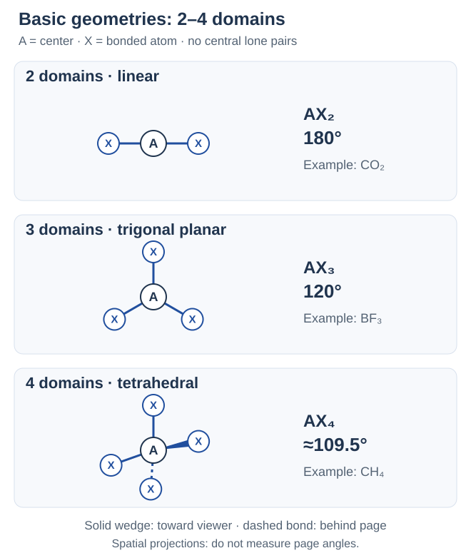
ตัวอย่าง CH2O รอบ C: มี C–H สองตำแหน่งและ C=O หนึ่งตำแหน่ง รวม 3 โดเมน ไม่มีคู่โดดเดี่ยวบน C จึงเป็น AX3 และสามเหลี่ยมแบนราบ แม้มีคู่ร่วมพันธะรวม 4 คู่ มุม 120° เป็นฐานอุดมคติ ไม่จำเป็นต้องเท่ากับมุมจริงทุกมุม เพราะชนิดพันธะและอะตอมปลายต่างกันได้
คำถาม 19 — เลือกแถวจากจำนวนโดเมนรวม
ก. ระบุเรขาคณิตและมุมอุดมคติของ CO2, BF3 และ CH4 โดยบอกจำนวนโดเมนรอบอะตอมกลางด้วย
ข. CH2O รอบ C มีคู่ร่วมพันธะกี่คู่ แต่มีโดเมนกี่โดเมน? ระบุแบบ AX เรขาคณิต และอธิบายว่าทุกมุมต้องเท่ากับ 120° จริงหรือไม่
ค. NH4+ มีเรขาคณิตเหมือน CH4 หรือไม่? ถ้าวาดพันธะสี่เส้นเป็นกากบาทในลิวอิส แปลว่ามุมจริงทุกมุมเป็น 90° ได้เลยหรือไม่?
ก. CO2: 2 โดเมน เส้นตรง 180°; BF3: 3 โดเมน สามเหลี่ยมแบนราบ 120°; CH4: 4 โดเมน ทรงสี่หน้า ประมาณ 109.5° แต่ละตัวอย่างไม่มีคู่โดดเดี่ยวบนอะตอมกลาง
ข. มีคู่ร่วม 4 คู่จาก C–H สองพันธะกับ C=O หนึ่งพันธะ แต่มี 3 โดเมน เป็น AX3 สามเหลี่ยมแบนราบ ค่า 120° เป็นมุมอุดมคติ มุมจริงอาจคลาดเพราะ C=O กับ C–H ผลักไม่เท่ากัน จึงไม่ยืนยันทุกมุมว่าเท่ากับ 120°
ค. เหมือนกันในแบบจำลองพื้นฐาน: NH4+ มี 4 โดเมนพันธะและไม่มีคู่โดดเดี่ยวบน N เป็น AX4 ทรงสี่หน้า มุมอุดมคติประมาณ 109.5° ภาพกากบาทเป็นเพียงการแสดงการเชื่อมต่อ ไม่ใช่หลักฐานว่ารูปร่างจริงแบนหรือมุม 90°
20. เรขาคณิตพื้นฐานของ 5–6 โดเมน
| จำนวนโดเมนและตัวอย่าง | เรขาคณิตและมุมอุดมคติ |
|---|---|
| 5: AX5 เช่น PCl5 ในแบบจำลองโมเลกุล | พีระมิดคู่ฐานสามเหลี่ยม (trigonal bipyramidal): 90°, 120° และ 180° โดยตำแหน่งทั้งห้าไม่ได้สมมูลกันทั้งหมด |
| 6: AX6 เช่น SF6 | ทรงแปดหน้า (octahedral): ตำแหน่งติดกัน 90° และตรงข้าม 180° มีทิศทางสู่จุดยอด 6 จุด ไม่ใช่หกเหลี่ยมแบน |
พีระมิดคู่ฐานสามเหลี่ยมมี 2 กลุ่มตำแหน่ง: ตำแหน่ง แนวแกน (axial) 2 ตำแหน่งอยู่เหนือ–ใต้ระนาบ ส่วน แนวศูนย์สูตร (equatorial) 3 ตำแหน่งอยู่ในระนาบสามเหลี่ยม คู่แนวศูนย์สูตรทำมุม 120° กันเอง คู่แนวแกนทำมุม 180° และแนวแกนกับแนวศูนย์สูตรทำมุม 90° ดังนั้นแนวแกนแต่ละตำแหน่งมีเพื่อนบ้านที่ 90° อยู่ 3 ตำแหน่ง ขณะที่แนวศูนย์สูตรมี 2 ตำแหน่ง
ทรงแปดหน้ามีโดเมน 6 ไม่ใช่ 8: ชื่อมาจากจำนวนหน้าสามเหลี่ยมของทรง ไม่ใช่จำนวนจุดยอดรอบอะตอมกลาง ในแบบอุดมคติทั้งหกตำแหน่งสมมูลกัน และจัดเป็น 3 คู่ตรงข้าม แต่ละตำแหน่งทำมุม 90° กับอีก 4 ตำแหน่ง และ 180° กับตำแหน่งตรงข้าม 1 ตำแหน่ง
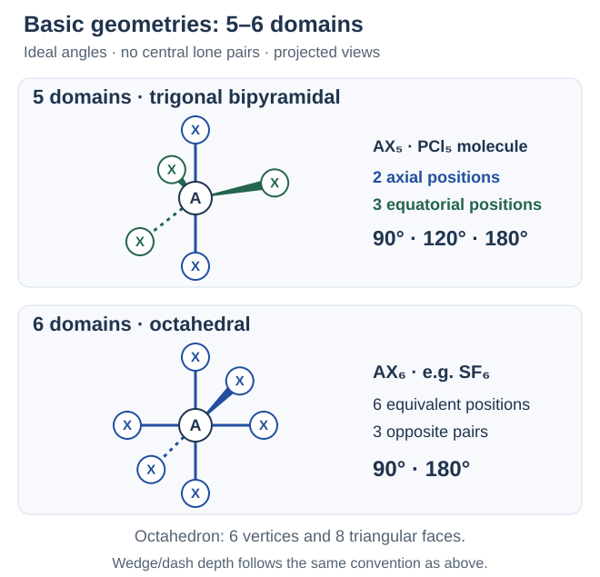
ลำดับใช้: เขียนลิวอิสให้ถูก → เลือกอะตอมกลาง → นับโดเมนพันธะกับคู่โดดเดี่ยวบนอะตอมนั้น → เลือกเรขาคณิต → แยกการเรียกชื่อรูปร่างตามตำแหน่งอะตอม มุมที่สรุปเป็นค่าอุดมคติ ไม่ใช่ค่ารับรองสำหรับทุกสาร ถ้ามีหลายอะตอมกลางให้พิจารณาแยกกัน เช่น C2H6 แต่ละ C เชื่อม H 3 ตัวกับ C อีก 1 ตัว จึงมี 4 โดเมนและจัดตัวแบบทรงสี่หน้ารอบ C แต่ละตัว ไม่บวกเป็น 8 โดเมนของศูนย์กลางเดียว
คำถาม 20 — แยกแนวแกน ศูนย์สูตร และคู่ตรงข้าม
ก. นับโดเมนของ PCl5 ในแบบจำลองโมเลกุล ระบุแบบ AX เรขาคณิต จำนวนแนวแกน–แนวศูนย์สูตร และมุมของคู่แต่ละกลุ่ม
ข. SF6 มีโดเมนกี่โดเมน ใช้แบบ AX และเรขาคณิตใด? เหตุใดชื่อทรงแปดหน้าจึงไม่ได้แปลว่า 8 โดเมน และมีมุมใดบ้าง?
ค. C2H6 มี C สองตัว จงนับโดเมนและระบุเรขาคณิตเฉพาะรอบ C แต่ละตัว ควรบวกทั้งสองศูนย์เป็น 8 โดเมนเพื่อเลือกรูปร่างเดียวหรือไม่?
ก. P มีพันธะเดี่ยว 5 ตำแหน่ง ไม่มีคู่โดดเดี่ยว จึงมี 5 โดเมน เป็น AX5 พีระมิดคู่ฐานสามเหลี่ยม: แนวแกน 2 ตำแหน่งทำมุม 180°; แนวศูนย์สูตร 3 ตำแหน่งทำมุม 120° กันเอง; คู่ข้ามกลุ่ม 90°
ข. มี S–F 6 ตำแหน่ง ไม่มีคู่โดดเดี่ยวบน S จึงมี 6 โดเมน เป็น AX6 ทรงแปดหน้า ชื่อแปดนับหน้าสามเหลี่ยมของทรง ส่วนโดเมนชี้สู่จุดยอด 6 จุด มีมุมติดกัน 90° และตรงข้าม 180°
ค. แต่ละ C มี C–H 3 ตำแหน่งและ C–C 1 ตำแหน่ง ไม่มีคู่โดดเดี่ยว จึงมี 4 โดเมน เป็น AX4 และทรงสี่หน้าเฉพาะรอบ C นั้น ต้องพิจารณาแยกแต่ละศูนย์ ไม่บวกเป็น 8 ของศูนย์กลางเดียว และไม่เรียกทั้งโมเลกุลว่าเป็นทรงสี่หน้าเพียงรูปเดียว
21. คู่โดดเดี่ยวเปลี่ยนรูปร่างและมุมอย่างไร
คู่โดดเดี่ยวยังอยู่ในโครงสร้างและออกแรงผลัก จึงต้องนับรวมตอนเลือกเรขาคณิตโดเมน แต่ชื่อรูปร่างโมเลกุลบอกเฉพาะตำแหน่งอะตอม ไม่นับตำแหน่งคู่โดดเดี่ยวเป็นอะตอมเพิ่ม ในภาพต่อไป LP ย่อจาก lone pair คือคู่โดดเดี่ยวบนอะตอมกลาง
ในแบบจำลองพื้นฐาน เมื่อเทียบสภาพแวดล้อมใกล้เคียงกัน แรงผลักโดยทั่วไปเรียง คู่โดดเดี่ยว–คู่โดดเดี่ยว > คู่โดดเดี่ยว–คู่ร่วมพันธะ > คู่ร่วมพันธะ–คู่ร่วมพันธะ คู่โดดเดี่ยวครอบครองพื้นที่เชิงมุมรอบอะตอมกลางมากกว่าคู่ร่วมพันธะ จึงเบียดทิศทางพันธะและทำให้มุมบางมุมลดจากค่าอุดมคติ
จำนวนโดเมนเท่ากันไม่ได้บังคับมุมจริงให้เท่ากัน: CH4, NH3 และ H2O ต่างมี 4 โดเมนรอบอะตอมกลาง แต่มีคู่โดดเดี่ยว 0, 1, 2 คู่ตามลำดับ มุมพันธะของสารตัวอย่างเหล่านี้เรียงประมาณ 109.5° > 107° > 104.5° ค่า 107° และ 104.5° เป็นค่าของแอมโมเนียและน้ำ ไม่ใช่ค่าตายตัวของทุกสารที่มีคู่โดดเดี่ยวเท่ากัน
VSEPR ช่วยทำนายรูปร่างและแนวโน้มมุม ไม่ใช่สูตรหามุมจริงโดยลบองศาคงที่ต่อคู่โดดเดี่ยวหนึ่งคู่ ชนิดอะตอม ชนิดพันธะ และสภาพแวดล้อมมีผลด้วย พันธะคู่–สามยังนับเป็นโดเมนเดียว แต่โดยทั่วไปกินพื้นที่เชิงมุมมากกว่าพันธะเดี่ยวที่เปรียบเทียบกันได้
คำถาม 21 — อย่าลบคู่โดดเดี่ยวทิ้งก่อนจัดโดเมน
ก. เมื่อมีคู่โดดเดี่ยวบนอะตอมกลาง ต้องนับตอนใด และเหตุใดชื่อเรขาคณิตโดเมนกับรูปร่างโมเลกุลจึงต่างกันได้?
ข. เรียงแรงผลักสามกรณีที่เกี่ยวกับคู่โดดเดี่ยวและคู่ร่วมพันธะ แล้วอธิบายแนวโน้มมุมที่ถูกเบียดจากค่าอุดมคติ
ค. ใช้จำนวนคู่โดดเดี่ยวเพียงอย่างเดียวสรุปว่า AX3E ทุกสารต้องมีมุม 107° ได้หรือไม่? แล้วการนับพันธะคู่เป็น 1 โดเมนแปลว่าแรงผลักเท่าพันธะเดี่ยวหรือไม่?
ก. นับคู่โดดเดี่ยวพร้อมโดเมนพันธะเพื่อเลือกเรขาคณิตก่อน ส่วนชื่อรูปร่างโมเลกุลพิจารณาตำแหน่งอะตอมเท่านั้น คู่โดดเดี่ยวไม่ใช่อะตอมเพิ่ม แต่ยังผลักและกำหนดตำแหน่งพันธะ จึงไม่ควรตัดออกก่อนจัดโดเมน
ข. โดยทั่วไปคู่โดดเดี่ยว–คู่โดดเดี่ยว > คู่โดดเดี่ยว–คู่ร่วมพันธะ > คู่ร่วมพันธะ–คู่ร่วมพันธะ ในสภาพแวดล้อมใกล้เคียงกัน คู่โดดเดี่ยวกินพื้นที่เชิงมุมมากกว่า จึงเบียดพันธะใกล้กันและทำให้มุมบางมุมเล็กลง ไม่ใช่ทุกมุมลดลงเท่ากันเสมอ
ค. ไม่ได้ 107° เป็นค่าประมาณของ NH3 ต้องดูชนิดอะตอม พันธะ และสภาพแวดล้อมด้วย ส่วนพันธะคู่มี 1 โดเมนเหมือนเดี่ยว แต่โดยทั่วไปกินพื้นที่เชิงมุมมากกว่าในกรณีที่เปรียบเทียบกันได้ จำนวนโดเมนกับขนาดแรงผลักเป็นคนละเรื่อง
22. รูปร่างที่มีคู่โดดเดี่ยวจาก 3–4 โดเมน
| แบบ AX และเรขาคณิตโดเมน | รูปร่างโมเลกุล ตัวอย่าง และมุม |
|---|---|
| AX2E: 2 พันธะ + 1 คู่โดดเดี่ยว = 3 โดเมน; สามเหลี่ยมแบนราบ | มุมงอ (bent) เช่น O3 และ NO2− พันธะสองทิศไม่อยู่ตรงข้ามกัน มุมของตัวอย่างเหล่านี้ต่ำกว่าฐานอุดมคติ 120° |
| AX3E: 3 พันธะ + 1 คู่โดดเดี่ยว = 4 โดเมน; ทรงสี่หน้า | พีระมิดฐานสามเหลี่ยม (trigonal pyramidal) เช่น NH3 มุม H–N–H ประมาณ 107° ต่ำกว่า 109.5° |
| AX2E2: 2 พันธะ + 2 คู่โดดเดี่ยว = 4 โดเมน; ทรงสี่หน้า | มุมงอ (bent) เช่น H2O มุม H–O–H ประมาณ 104.5° ไม่ใช่เส้นตรงเพียงเพราะมี H สองตัว |
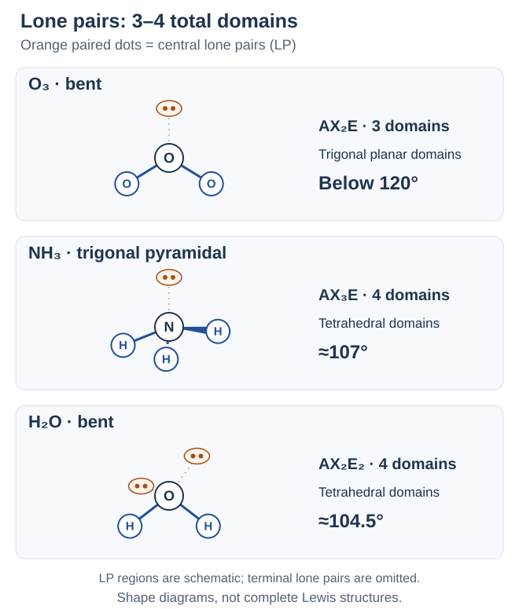
มุมงอมีได้จากเรขาคณิตโดเมนต่างกัน: O3 กับ H2O ต่างเป็นมุมงอ แต่ตัวแรกมี 3 โดเมน ตัวหลังมี 4 จึงไม่ควรจำคำว่า “มุมงอ” แล้วกำหนดมุมเดียวให้ทุกสาร สำหรับสารเรโซแนนซ์ การเปลี่ยนตำแหน่งพันธะคู่ในรูปเขียนไม่เปลี่ยนจำนวนโดเมนรอบอะตอมกลาง
คำถาม 22 — นับโดเมนก่อนตั้งชื่อรูปร่าง
ก. เปรียบเทียบ O3 กับ H2O: เขียนแบบ AX จำนวนโดเมน เรขาคณิตโดเมน และรูปร่างโมเลกุล เหตุใดจึงไม่ควรให้มุมเท่ากันเพียงเพราะชื่อรูปร่างเหมือนกัน?
ข. NH3 เป็น AX แบบใด มีเรขาคณิตโดเมนและรูปร่างโมเลกุลอะไร พร้อมบอกมุมโดยประมาณ? ทำไมจึงไม่ใช่สามเหลี่ยมแบนราบ?
ค. เรียงมุมพันธะของ CH4, NH3 และ H2O พร้อมจำนวนคู่โดดเดี่ยวบนอะตอมกลาง และอธิบายขอบเขตของการเทียบนี้
ก. O3: AX2E รวม 3 โดเมน สามเหลี่ยมแบนราบแต่รูปร่างมุมงอ; H2O: AX2E2 รวม 4 โดเมน ทรงสี่หน้าแต่รูปร่างมุมงอ ชื่อรูปร่างเหมือนกันแต่เรขาคณิตโดเมนและจำนวนคู่โดดเดี่ยวต่างกัน จึงไม่มีมุมร่วมตายตัว
ข. เป็น AX3E มี 4 โดเมน เรขาคณิตทรงสี่หน้า รูปร่างพีระมิดฐานสามเหลี่ยม มุมประมาณ 107° ต้องรวมคู่โดดเดี่ยวบน N อีก 1 คู่ จึงไม่ใช้จำนวน H สามตัวเลือกแถว 3 โดเมน
ค. CH4 ประมาณ 109.5° (0 คู่) > NH3 ประมาณ 107° (1 คู่) > H2O ประมาณ 104.5° (2 คู่) เป็นการเทียบสารตัวอย่างเหล่านี้ ไม่ใช่กฎให้ทุกสารที่มี 0, 1, 2 คู่โดดเดี่ยวต้องใช้มุมเดียวกันทั้งหมด
23. คู่โดดเดี่ยวในเรขาคณิต 5 โดเมน
แนวศูนย์สูตรเหมาะกับคู่โดดเดี่ยวในแบบจำลองพื้นฐานนี้ เพราะมีตำแหน่งอื่นที่ทำมุม 90° ด้วยเพียง 2 ตำแหน่ง ขณะที่แนวแกนมี 3 ตำแหน่ง จึงลดการผลักที่มุมแคบจาก LP ได้ เมื่อมี LP เพิ่ม ให้จัดในแนวศูนย์สูตรก่อน ไม่เลือกตำแหน่งตามความว่างของภาพสองมิติ
สัญลักษณ์ที่ใช้เพิ่มคือ Xe = ซีนอน อะตอมเป็นกลางมีเวเลนซ์อิเล็กตรอน 8 ตัว ตารางนี้ทุกกรณีมีเรขาคณิตโดเมนเป็น พีระมิดคู่ฐานสามเหลี่ยม และมีคู่โดดเดี่ยวต่างจำนวน:
| ลิวอิสและแบบ AX | ตำแหน่ง LP และรูปร่างจากอะตอมที่เหลือ |
|---|---|
| SF4: 34 อิเล็กตรอน; S มี 4 พันธะกับ LP 1 คู่ → AX4E | LP อยู่ศูนย์สูตร 1 ตำแหน่ง เหลืออะตอมแนวแกน 2 และศูนย์สูตร 2 เป็นรูปกระดานหก (seesaw) |
| ClF3: 28 อิเล็กตรอน; Cl มี 3 พันธะกับ LP 2 คู่ → AX3E2 | LP อยู่ศูนย์สูตร 2 ตำแหน่ง เหลืออะตอมแนวแกน 2 และศูนย์สูตร 1 เป็นรูปตัวที (T-shaped) |
| XeF2: 22 อิเล็กตรอน; Xe มี 2 พันธะกับ LP 3 คู่ → AX2E3 | LP ครบทั้ง 3 ตำแหน่งศูนย์สูตร เหลืออะตอมแนวแกนตรงข้ามกัน เป็นเส้นตรง (linear), 180° |
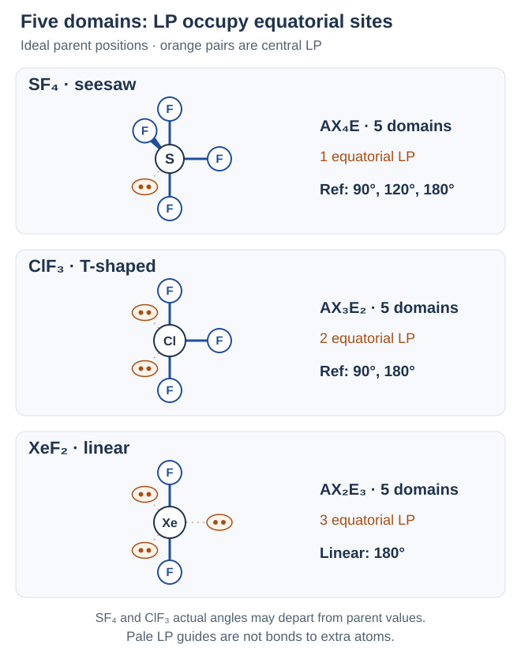
ตัวอย่างไอออน: I คือไอโอดีน มีเวเลนซ์อิเล็กตรอน 7 ตัว I3− มีรวม 3 × 7 + 1 = 22 ตัว อะตอม I กลางมีพันธะ 2 กับ LP 3 คู่ จึงเป็น AX2E3 และเส้นตรงเช่นกัน ต้องรวมประจุลบในบัญชีอิเล็กตรอนก่อนนับโดเมน
SF4 และ ClF3 ไม่จำเป็นต้องคงมุมทุกมุมตามเรขาคณิตแม่ ส่วนคำว่า “เส้นตรง” อย่างเดียวไม่ได้บอกว่าเป็น 2 โดเมนเสมอ: CO2 เป็น AX2 แต่ XeF2 เป็น AX2E3
คำถาม 23 — วาง LP ศูนย์สูตรก่อนดูอะตอม
ก. SF4 มีเวเลนซ์อิเล็กตรอนรวมเท่าใด และเป็น AX แบบใด? เลือกตำแหน่ง LP และระบุทั้งเรขาคณิตโดเมนกับรูปร่าง พร้อมเหตุผลการเลือกตำแหน่ง
ข. ClF3 มีอิเล็กตรอนรวมและ LP บน Cl กี่คู่ อยู่ที่ใด และรูปร่างเป็นอะไร? เหตุใดการมี F สามตัวจึงไม่ทำให้เป็นสามเหลี่ยมแบนราบ?
ค. เปรียบเทียบ CO2 กับ XeF2 ทั้งสองเป็นเส้นตรง แต่แบบ AX จำนวนโดเมน และเรขาคณิตโดเมนเหมือนกันหรือไม่?
ก. รวม 6 + 4 × 7 = 34 ตัว S มี 4 พันธะกับ LP 1 คู่ รวม 5 โดเมน เป็น AX4E เรขาคณิตพีระมิดคู่ฐานสามเหลี่ยม LP อยู่ศูนย์สูตรเพราะมีการเผชิญที่ 90° เพียง 2 แทน 3 รูปร่างจากอะตอมที่เหลือเป็นกระดานหก
ข. รวม 7 + 3 × 7 = 28 ตัว มี LP 2 คู่บน Cl จึงเป็น AX3E2 รวม 5 โดเมน LP ทั้งสองอยู่ศูนย์สูตร เหลือ F แนวแกน 2 กับศูนย์สูตร 1 เป็นรูปตัวที ต้องนับ LP ด้วย ไม่เลือกจาก F สามตัวอย่างเดียว
ค. ไม่เหมือน CO2 เป็น AX2 มี 2 โดเมน เรขาคณิตเส้นตรง ส่วน XeF2 เป็น AX2E3 มี 5 โดเมน เรขาคณิตพีระมิดคู่ฐานสามเหลี่ยม โดย LP ทั้งสามอยู่ศูนย์สูตร เหลือ F แนวแกนทำมุม 180°
24. คู่โดดเดี่ยวในเรขาคณิต 6 โดเมน
Br คือโบรมีน อะตอมเป็นกลางมีเวเลนซ์อิเล็กตรอน 7 ตัว กรณีต่อไปนี้มีเรขาคณิตโดเมนเป็น ทรงแปดหน้า ถ้ามี LP หนึ่งคู่ เลือกตำแหน่งใดก็สมมูลกันในเรขาคณิตแม่; ถ้ามีสองคู่ ให้จัด ตรงข้ามกัน 180° เพื่อลดการผลัก LP–LP แทนการวางติดกันที่ 90°
| ลิวอิสและแบบ AX | ตำแหน่ง LP และรูปร่างโมเลกุล |
|---|---|
| BrF5: 42 อิเล็กตรอน; Br มี 5 พันธะกับ LP 1 คู่ → AX5E | พีระมิดฐานสี่เหลี่ยม (square pyramidal): อะตอมฐาน 4 และยอด 1 ใช้มุม 90°/180° ของเรขาคณิตแม่เป็นฐานอ้างอิง มุมจริงอาจคลาด |
| XeF4: 36 อิเล็กตรอน; Xe มี 4 พันธะกับ LP 2 คู่ → AX4E2 | LP ตรงข้ามกัน เหลือ F สี่ตัวกับ Xe อยู่ในระนาบเดียว เป็นสี่เหลี่ยมแบนราบ (square planar) มุมอุดมคติ 90° และ 180° |
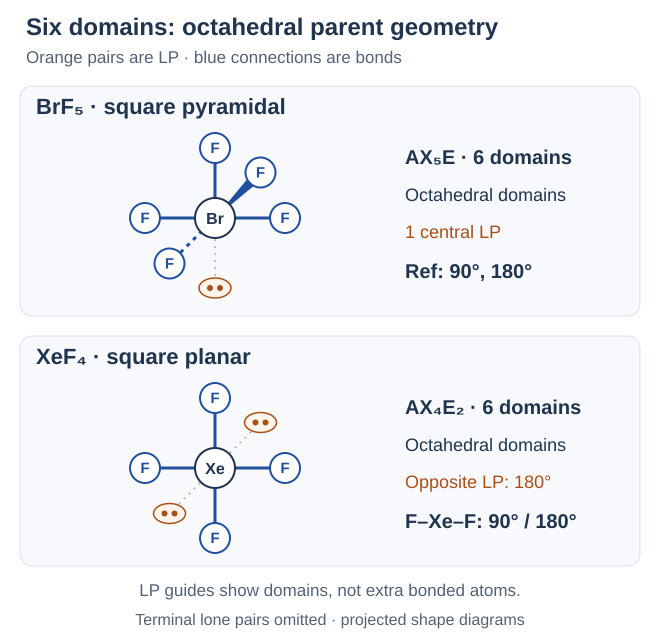
มีพันธะรอบกลาง 4 ตำแหน่งเหมือนกัน แต่รูปร่างต่างกันได้: CH4 เป็น AX4 มี 4 โดเมน → ทรงสี่หน้า; SF4 เป็น AX4E มี 5 โดเมน → กระดานหก; XeF4 เป็น AX4E2 มี 6 โดเมน → สี่เหลี่ยมแบนราบ ดังนั้นต้องรายงานให้ครบ ลิวอิส → n, m → เรขาคณิตโดเมน → ตำแหน่ง LP → รูปร่างและมุมที่เหมาะสม
คำถาม 24 — ดูคู่โดดเดี่ยวด้วย ไม่ใช่จำนวน F อย่างเดียว
ก. นับอิเล็กตรอนและโดเมนของ BrF5 ระบุแบบ AX เรขาคณิตโดเมน และรูปร่าง เหตุใดจึงไม่ใช่พีระมิดคู่ฐานสามเหลี่ยมแบบ AX5?
ข. XeF4 มีอิเล็กตรอนรวมและ LP บน Xe เท่าใด วาง LP อย่างไร แล้วได้เรขาคณิตโดเมน รูปร่าง และมุมอุดมคติใด?
ค. CH4, SF4 และ XeF4 มีอะตอมต่อกับกลาง 4 ตัวเหมือนกัน จงเปรียบเทียบแบบ AX จำนวนโดเมน และรูปร่าง
ก. รวม 7 + 5 × 7 = 42 ตัว Br มี 5 พันธะกับ LP 1 คู่ เป็น AX5E รวม 6 โดเมน เรขาคณิตทรงแปดหน้า รูปร่างพีระมิดฐานสี่เหลี่ยม ไม่ใช่ AX5 ที่ไม่มี LP และมีเพียง 5 โดเมน
ข. รวม 8 + 4 × 7 = 36 ตัว มี LP บน Xe 2 คู่ เป็น AX4E2 รวม 6 โดเมน เรขาคณิตทรงแปดหน้า วาง LP ตรงข้าม 180° เพื่อลดแรงผลัก เหลือ F สี่ตัวในระนาบเดียวกับ Xe รูปร่างสี่เหลี่ยมแบนราบ มุม 90°/180°
ค. CH4: AX4, 4 โดเมน, ทรงสี่หน้า; SF4: AX4E, 5 โดเมน, กระดานหก; XeF4: AX4E2, 6 โดเมน, สี่เหลี่ยมแบนราบ จำนวนอะตอมที่เชื่อมอย่างเดียวไม่พอ ต้องรวม LP บนอะตอมกลางก่อนเลือกเรขาคณิต
แหล่งศึกษาต่อและตรวจสอบ
- สสวท. Project 14 — รูปร่างโมเลกุลโคเวเลนต์ ตอนที่ 2
- สสวท. Project 14 — รูปร่างโมเลกุลโคเวเลนต์ ตอนที่ 1
- OpenStax Chemistry 2e 7.6 — VSEPR โดเมน รูปร่าง คู่โดดเดี่ยว และมุมพันธะ
- สสวท. Project 14 — พลังงานพันธะของสารโคเวเลนต์
- University of Texas CH301 — การคำนวณเอนทัลปีและการตัดพจน์พันธะ
- OpenStax Chemistry 2e 7.4 — ประจุฟอร์มัลและเรโซแนนซ์
- University of Texas CH301 — เรโซแนนซ์และความเข้าใจผิดเรื่องการสลับรูป
- Maricopa CHM130 — การเขียนลิวอิสของโมเลกุลและไอออน
- สสวท. Project 14 — สูตรโมเลกุลและชื่อของสารโคเวเลนต์
- OpenStax Chemistry 2e 2.4 — สูตรโมเลกุล สูตรอย่างง่าย และการนับอะตอม
- OpenStax Chemistry 2e 2.7 — คำนำหน้า ชื่อสารโมเลกุล และชื่อกรด
- OpenStax Chemistry 2e 7.5 — ชุดค่าความยาว/พลังงานพันธะและการประมาณเอนทัลปี
- สสวท. Project 14 — การเกิดพันธะโคเวเลนต์
- OpenStax Chemistry 2e 7.2 — การเกิดพันธะและพลังงานศักย์
- OpenStax Chemistry 2e 7.3 — ลิวอิส การให้คู่ และข้อยกเว้นออกเตต
Recall goals: Shared electrons, equilibrium separation, bonding and lone pairs, single/double/triple bonds, molecular versus empirical formulas, compound naming, Lewis structures, formal charge, resonance, coordinate bonds, octet exceptions, bond lengths/energies, reaction enthalpy, VSEPR geometry, lone-pair shapes and angle distortions. Answer before revealing solutions; writing space follows every subpart.
1. Sharing electrons
A covalent bond holds atoms together through shared electrons attracted to both nuclei. Such bonds commonly occur between nonmetal atoms. One bonding pair contains 2 electrons and may be represented by one bond line.
Example: H2. H denotes hydrogen; each atom has 1 valence electron. Sharing one pair gives H–H. Each H counts the shared pair as 2 electrons around itself, satisfying the duet rule rather than requiring 8. The whole molecule contains 2 actual electrons, not 4: the same pair is counted around both atoms.
Question 1 — One pair counted around two atoms
a. What attracts the shared electrons in a covalent bond, and how many electrons make one bonding pair?
b. How many actual electrons are present in H2, how many does each H count around itself, and why is an octet unnecessary?
a. Both atomic nuclei attract the shared electrons. One bonding pair contains 2 electrons.
b. The molecule contains 2 electrons. Each H counts that shared pair as 2 around itself. Hydrogen follows the duet rule: its first shell holds 2, not 8. Counting around both atoms does not create extra electrons.
2. Atomic separation and bond energy
In this graph model, widely separated atoms define zero reference potential energy. As they approach through a range dominated by attraction, energy falls to a minimum: the equilibrium bond separation, where the net force is zero in the model.
Much shorter separations make nucleus–nucleus and electron–electron repulsions dominant, raising the energy. Thus closest does not mean most stable. Forming a bond from separated atoms releases energy; breaking that bond to separate them requires energy. These statements concern bond-making or bond-breaking steps, not the net energy of every overall reaction.
Question 2 — Read the curve
a. Where is the equilibrium bond separation on the curve, and is its energy higher or lower than for widely separated atoms?
b. What happens to energy if the atoms are pushed much closer than equilibrium, and why?
c. Which step releases energy and which requires it: bond formation from separated atoms, or bond breaking to separate them?
a. At the energy minimum. Its energy is lower than the zero reference for widely separated atoms.
b. Energy rises because repulsion becomes dominant, including nucleus–nucleus and electron–electron repulsion. Closer therefore does not always mean more stable.
c. Bond formation releases energy; bond breaking requires energy. All steps must be combined to determine an overall reaction’s net energy.
3. Bonding pairs, lone pairs and bond types
A bonding pair is shared between two atoms. A lone pair is a pair of valence electrons not shared in a bond. In a Lewis diagram, one dot represents 1 electron and one bond line represents 1 shared pair.
Additional symbols are O = oxygen and N = nitrogen. Single, double and triple bonds share 1, 2 and 3 pairs respectively; these names do not count atoms.
| Example | Bonding pairs and lone pairs |
|---|---|
| H2: H–H, single bond | 1 shared pair (2 electrons); no lone pairs. |
| O2: O=O, double bond | 2 shared pairs (4 electrons); 2 lone pairs on each O atom. |
| N2: N≡N, triple bond | 3 shared pairs (6 electrons); 1 lone pair on each N atom. |
| H2O: 2 single O–H bonds | 2 shared pairs in total and 2 lone pairs on O. The whole molecule has 8 valence electrons: 4 in bonds + 4 in lone pairs. |
Question 3 — Count pairs and electrons
a. How many pairs and how many electrons are shared between the atoms in H2, O2 and N2, respectively?
b. How many lone pairs occur on each O atom in O2 and on each N atom in N2?
c. Draw the Lewis structure of H2O with its lone pairs. Count bonding pairs, lone pairs and total valence electrons in the molecule.
a. Respectively: 1, 2 and 3 pairs, or 2, 4 and 6 electrons. These are single, double and triple bonds, but each molecule in this question still has 2 atoms.
b. Each O has 2 lone pairs; each N has 1. These lone pairs do not add to the shared-pair count.
c. O forms a single bond to each of two H atoms and has 2 lone pairs. There are 2 shared pairs (4 electrons) and 2 lone pairs (4 electrons), giving 8 valence electrons in the whole molecule.
4. Molecular and empirical formulas
A molecular formula gives the actual atom counts in 1 molecule; subscript 1 is omitted. N2O4 contains 2 N and 4 O atoms. An empirical formula gives the smallest whole-number ratio, NO2 for this example. Do not substitute the empirical formula when a molecular formula is requested.
The new symbol is C = carbon. Examples of reducing atom ratios:
| Molecular formula | Empirical formula |
|---|---|
| N2O4 | NO2: divide all atom counts by 2. |
| H2O2 | HO: divide by 2, giving H:O = 1:1. This does not mean the original molecule contains only 2 atoms. |
| C6H12O6 | CH2O: divide by 6. |
A coefficient counts molecules; subscripts count atoms within each molecule. At the particle level, 2CO2 means 2 molecules of CO2, containing 2 C and 4 O atoms in total. A molecular formula alone does not fully specify connectivity or shape; structural information is also needed.
Question 4 — Keep actual counts separate from ratios
a. How many N and O atoms occur in 1 molecule of N2O4? Give its empirical formula and explain whether that can simply replace the molecular formula.
b. At the particle level, how many molecules and total C and O atoms does 2CO2 represent? How do the two occurrences of 2 differ?
c. Does a molecular formula alone fully specify how atoms connect and the molecular shape?
a. It contains 2 N and 4 O atoms. NO2 is the empirical formula for the 1:2 ratio, but the molecular formula remains N2O4 to preserve actual atom counts.
b. It represents 2 molecules, containing 2 C and 4 O atoms in total. The coefficient counts molecules; subscript 2 counts O atoms per molecule. Each molecule retains its formula.
c. Generally no. It gives atom types and counts; structural and arrangement information is needed to explain connectivity and shape.
5. Name binary molecular compounds
A binary compound contains 2 element types, not necessarily only 2 atoms. The prefix system here applies to common binary molecular compounds. Read the first element in the given formula first, followed by the second element with an –ide ending, such as oxide, chloride or fluoride.
| Atom count | Prefix |
|---|---|
| 1 | mono- |
| 2 | di- |
| 3 | tri- |
| 4 | tetra- |
| 5 | penta- |
| 6 | hexa- |
| 7 | hepta- |
| 8 | octa- |
| 9 | nona- |
| 10 | deca- |
Mono- is usually omitted for 1 atom of the first element, but retained for 1 atom of the second. CO is carbon monoxide; CO2 is carbon dioxide. Common contracted oxide forms used here are monoxide, tetroxide and pentoxide.
Additional symbols are P = phosphorus, S = sulfur, Cl = chlorine and F = fluorine.
| Second element | Name ending |
|---|---|
| H — hydrogen | Hydride |
| N — nitrogen | Nitride |
| O — oxygen | Oxide |
| S — sulfur | Sulfide |
| F — fluorine | Fluoride |
| Cl — chlorine | Chloride |
| Br — bromine | Bromide |
| I — iodine | Iodide |
| Formula | Compound name |
|---|---|
| CO | Carbon monoxide |
| CO2 | Carbon dioxide |
| N2O4 | Dinitrogen tetroxide |
| PCl3 | Phosphorus trichloride |
| SF6 | Sulfur hexafluoride |
Question 5 — Read atom counts from formulas
a. Name CO, CO2 and N2O4. Explain why CO has no mono- before carbon.
b. Name PCl3 and SF6. Does “binary” require only 2 atoms in the whole molecule?
a. CO: carbon monoxide. CO2: carbon dioxide. N2O4: dinitrogen tetroxide. Mono- is usually omitted for a single atom of the first element, but the single O is still specified in monoxide.
b. PCl3: phosphorus trichloride. SF6: sulfur hexafluoride. Binary means 2 element types, so the total atom count can exceed 2.
6. Write formulas from names and recognize common names
Name → element symbols → prefix counts → subscripts. In this system, an unprefixed first element has 1 atom; omit subscript 1. Sulfur trioxide gives SO3; dinitrogen pentoxide gives N2O5. Preserve the counts stated in the name rather than reducing them, and do not substitute ionic charge-crossing for the naming information.
Some substances commonly use specific names, which should be learned alongside prefix rules:
| Formula | Common name |
|---|---|
| H2O | Water |
| NH3 | Ammonia |
| CH4 | Methane |
Physical state can affect the name used: (g) means gas and (aq) means a substance in aqueous solution. HCl(g) is hydrogen chloride; HCl(aq) is hydrochloric acid. Acid naming has additional conventions.
Question 6 — Convert names back to formulas
a. Write formulas for sulfur trioxide and dinitrogen pentoxide, giving the atom counts for each element.
b. Give the common names of H2O, NH3 and CH4, respectively.
c. Name HCl(g) and HCl(aq), explaining (g) and (aq).
a. SO3: 1 S and 3 O atoms. N2O5: 2 N and 5 O atoms. Prefixes specify atom counts in the molecule, not charges.
b. Water, ammonia and methane, respectively. Common names coexist with prefix naming; one rule need not be forced onto every substance.
c. HCl(g) is hydrogen chloride gas; HCl(aq) is hydrochloric acid in aqueous solution. Read the state along with the formula when naming it.
7. Count valence electrons and choose a skeleton
A Lewis structure shows atomic connections and valence electrons using bond lines and dots. First calculate the electrons available by adding atom count × valence electrons per atom for every element. For the neutral atoms used in this round:
| Element | Valence electrons per atom |
|---|---|
| H hydrogen | 1 |
| C carbon | 4 |
| N nitrogen | 5 |
| O oxygen | 6 |
| F fluorine; Cl chlorine | 7 |
Examples: NH3: 5 + 3 × 1 = 8 electrons; CO2: 4 + 2 × 6 = 16; HCN: 1 + 4 + 5 = 10. Count valence electrons rather than every electron in the atoms.
The central atom connects to other atoms in a simple skeleton. It is often the element with lower electronegativity, meaning its ability to attract shared bonding electrons. H is terminal with 1 single bond; F is terminal in these introductory examples. Use O–C–O for CO2, H–C–N for HCN and F–O–F for OF2. These are guidelines: use connectivity information when several skeletons are possible, and do not assume the first element in a formula must be central.
Question 7 — Keep an electron budget before drawing
a. Count the total valence electrons in NH3, CO2 and HCN, showing how each total is obtained.
b. Choose the central atom and draw skeletons for CO2 and HCN. Why is H not central in HCN?
c. How many valence electrons does OF2 have, which atom is central, and what does electronegativity mean?
a. NH3: 5 + 3 × 1 = 8; CO2: 4 + 2 × 6 = 16; HCN: 1 + 4 + 5 = 10 electrons. Include the valence electrons from every atom.
b. C is central in both: O–C–O and H–C–N. H makes only 1 single bond in these examples, so it is terminal. These skeletons are not yet complete Lewis structures.
c. 6 + 2 × 7 = 20 electrons. O is central in F–O–F because F attracts shared bonding electrons more strongly and is terminal here. Electronegativity is the ability to attract shared bonding electrons.
8. Place electrons and form double or triple bonds
For the examples that obey the octet rule in this round, continue from the electron budget:
- Join the skeleton with single bonds. Subtract 2 electrons per bond from the available total.
- Complete terminal atoms with lone pairs first until each has 8 electrons. H already has its required 2 from its single bond.
- Put any remaining electrons on the central atom. Check each atom for the appropriate duet or octet.
- If the central atom is short of an octet and the budget is exhausted, move neighboring lone pairs into additional shared pairs to form double or triple bonds. Do not add new electrons.
- Check two different counts: the actual total in bonds plus lone pairs must match the original budget; when checking around an individual atom, count both electrons of each shared pair around that atom.
Walk through CO2: start with 16 electrons → 2 single bonds use 4, leaving 12 → put 3 lone pairs on each O, using all 12, but C has only 4 around it → move 1 lone pair from each O into bonding. The result is O=C=O: C has an octet, each O retains 2 lone pairs, and the actual total remains 16.
| Further example | Result and electron check |
|---|---|
| NH3: 8 electrons | 3 N–H single bonds use 6; the remaining 2 form 1 lone pair on N. N counts 8 around itself and each H counts 2. |
| HCN: 10 electrons | The H–C–N skeleton uses 4; place 6 on N, then move 2 pairs into bonding. H–C≡N has 1 lone pair on N: 8 in bonds + 2 in the lone pair = 10. |
Show lone pairs in a complete Lewis structure. Do not read a three-dimensional shape directly from a flat drawing. This procedure serves the introductory examples; it does not require every substance to obey the octet rule.
Question 8 — Draw and check both counts
a. Draw the full Lewis structure of NH3, including lone pairs. Check the actual molecular total and the count around N.
b. Draw the full Lewis structure of CO2, specifying the lone pairs on each O. Why can you not simply add new electrons to C in the single-bonded skeleton?
c. Draw the full Lewis structure of HCN, including lone pairs. Identify the C–N bond type and check the actual molecular total.
a. Central N has 3 single bonds to H and 1 lone pair. The molecule has 3 × 2 + 2 = 8 electrons. N counts 6 from bonds + 2 from its lone pair = 8 around itself; each H counts 2.
b. O=C=O has 2 lone pairs per O and none on C: 8 electrons in bonds + 8 in lone pairs = 16. Once all 16 are placed, move existing pairs into additional bonding; adding new electrons would exceed the budget.
c. H–C≡N has 1 lone pair on N, a C–N triple bond and an H–C single bond: 2 + 6 + 2 = 10 electrons. C and N have octets; H has a duet.
9. Lewis structures of polyatomic ions
A polyatomic ion is a group of atoms with a net charge. Count as for a molecule, then add electrons for negative charge or subtract electrons for positive charge, using the magnitude of that charge. A 2− charge adds 2 electrons; a 2+ charge subtracts 2. Place bonds and lone pairs using the same procedure.
| Ion and electron budget | Required structure |
|---|---|
| NH4+ ammonium: 5 + 4 × 1 − 1 = 8 | Central N has 4 N–H single bonds, using all 8 electrons, and no lone pairs. |
| OH− hydroxide: 6 + 1 + 1 = 8 | 1 O–H single bond uses 2 electrons; the other 6 make 3 lone pairs on O. |
Enclose the entire Lewis structure in square brackets and put the net charge as a superscript outside the upper right bracket. This is the charge of the whole ion, not the same charge on every atom. The example ions contain covalent bonds internally; being charged does not turn their internal bond lines into ionic bonds.
Question 9 — Include charge in the budget and drawing
a. Count the valence electrons and draw the full Lewis structure of NH4+, including brackets and charge. Give the bond count and lone pairs on N.
b. Count the valence electrons and draw the full Lewis structure of OH−, including brackets and charge. How many lone pairs are on O?
c. Why do NH3 and NH4+ have the same total valence electrons, and what does the + outside the NH4+ Lewis brackets describe?
a. 5 + 4 × 1 − 1 = 8 electrons. Draw N single bonded to 4 H atoms with no lone pairs on N. Bracket the entire drawing with + outside the upper right bracket. N counts 8 around itself; each H counts 2.
b. 6 + 1 + 1 = 8 electrons. Draw O–H with 3 lone pairs on O. Bracket the entire drawing with − outside the upper right bracket: 2 in the bond + 6 in lone pairs = 8.
c. NH3 has 5 + 3 = 8; NH4+ has 5 + 4 − 1 = 8. Adding one H atom in the count and subtracting 1 for the positive charge keeps the total unchanged. The + describes the net charge of the whole ion, not + on every H atom.
10. Formal charge and choosing a Lewis structure
Formal charge (FC) assigns electrons to individual atoms by splitting every bonding pair equally. It is an accounting value, not the actual partial charge caused by unequal attraction for electrons.
FC = neutral-atom valence electrons − nonbonding electrons − ½ × bonding electrons. Count electrons, not pairs: one lone pair contributes 2 nonbonding electrons, and an unpaired nonbonding electron also counts. Single, double and triple bonds contain 2, 4 and 6 electrons, respectively. A shortcut subtracts the number of bond lines for the last term, counting a double bond as 2 lines and a triple bond as 3.
| Atom in the specified structure | FC calculation and sum |
|---|---|
| NH3: N has 3 single bonds and 1 lone pair | N: 5 − 2 − 6/2 = 0; each H: 1 − 0 − 2/2 = 0. Sum 0. |
| NH4+: N has 4 single bonds and no lone pair | N: 5 − 0 − 8/2 = +1; each H is 0. Sum +1. |
| OH−: O has 1 single bond and 3 lone pairs | O: 6 − 6 − 2/2 = −1; H: 0. Sum −1. |
| CO: C≡O with 1 lone pair on each atom | C: 4 − 2 − 6/2 = −1; O: 6 − 2 − 6/2 = +1. Sum 0 although the individual values are nonzero. |
The FC sum must equal the net charge: 0 for a neutral molecule, or the charge outside an ion's brackets. Among structures with correct atom and electron counts, generally prefer smaller formal charges and less charge separation. For comparable charge distributions, favor negative FC on the more electronegative element. Respect the appropriate duet/octet rules and exceptions; do not force every FC to zero.
CO2 example: O=C=O has FC 0 on every atom and is a more important contributor than O≡C–O, whose values are +1, 0, −1 in order. Both sum to 0 and correctly use 16 electrons, so checking only the sum cannot select the preferred structure.
Question 10 — Calculate each atom, then add
a. Calculate FC on N and every H in NH4+, and on O and H in OH−, using the structures from the previous round.
b. For CO with C≡O and 1 lone pair on each atom, calculate both formal charges and their sum. Must every atom in a neutral molecule have FC 0?
c. Compare O=C=O and O≡C–O with lone pairs completing every octet. Which is the more important contributor, why, and is FC an actual partial charge?
a. NH4+: N = 5 − 0 − 8/2 = +1; each H = 0, summing to +1. OH−: O = 6 − 6 − 2/2 = −1; H = 0, summing to −1. The net charge is not the same charge on every atom.
b. C = 4 − 2 − 6/2 = −1; O = 6 − 2 − 6/2 = +1. The sum is 0: a molecule can be neutral while individual formal charges are nonzero. Both C and O still have octets.
c. The first has 2 lone pairs per O and FC 0 everywhere. The second has 1 lone pair on the triply bonded O and 3 on the singly bonded O, giving +1, 0, −1. Favor the first because it has less charge separation. FC is an accounting value, not an actual partial charge.
11. Resonance: several drawings for one actual structure
Resonance forms retain the same atomic positions and connectivity, electron count and net charge, but differ in how electrons occupy bonds and lone pairs. Join them with ↔, rather than a reaction arrow → or equilibrium arrows ⇌. The actual structure is a resonance hybrid with electrons distributed over several atoms; it does not switch back and forth between the drawings.
NO2− (nitrite) has 5 + 2 × 6 + 1 = 18 electrons and 2 equivalent principal forms. Each has central N with 1 lone pair, one N=O and one N–O bond. The doubly bonded O has 2 lone pairs and FC 0; the singly bonded O has 3 lone pairs and FC −1; N has FC 0, giving a total of −1.
Bond order in a drawing is 1, 2 or 3 for a single, double or triple bond. For equivalent forms with equal contributions, average their bond orders. In NO2−, (1 + 2)/2 = 1.5 per N–O in this model, rather than one permanently single and one permanently double bond. Nonequivalent forms need not contribute equally.
| Further equivalent principal forms | Number of forms and model average bond order |
|---|---|
| O3, ozone: 18 electrons; central O has 1 lone pair and FC +1, the singly bonded terminal O has FC −1 and the other terminal O has FC 0. Total 0. | 2 forms; each O–O averages (1 + 2)/2 = 1.5. |
| CO32−, carbonate: 24 electrons; each form has one C=O and two C–O bonds. C has no lone pair and FC 0; doubly bonded O has 2 lone pairs and FC 0; each singly bonded O has 3 lone pairs and FC −1. Total −2. | 3 forms; each C–O averages (2 + 1 + 1)/3 = 4/3. |
Question 11 — Keep the atoms, change electron placement
a. Draw the 2 principal resonance forms of NO2−, including lone pairs, brackets and charge. Give each atomic FC and the total electron count.
b. Does actual NO2− switch between single and double bonds? Find the average N–O bond order and explain ↔.
c. How many equivalent principal forms do O3 and CO32− have? Give the average order per O–O or C–O bond and the required FC sum.
a. Use 18 electrons: [O=N–O]− ↔ [O–N=O]−. N has 1 lone pair in each; doubly bonded O has 2 lone pairs and FC 0; singly bonded O has 3 lone pairs and FC −1; N has FC 0. Both retain the O–N–O connectivity and sum to −1.
b. The actual structure is a hybrid, not a switch between drawings. Both N–O bonds are equivalent, with model average order (1 + 2)/2 = 1.5. The ↔ joins resonance forms, not substances in equilibrium.
c. O3: 2 forms, average order 1.5, FC sum 0. CO32−: 3 forms, average order 4/3, FC sum −2. Changing double-bond placement in the drawings does not move atoms or change the net charge.
12. Coordinate bonds: one donor supplies the shared pair
A coordinate covalent bond forms when both electrons in the new shared pair originate from the same donor atom. The donor has a lone pair; the acceptor has a vacant orbital that can accept it. A donor → acceptor arrow records the pair's origin, not complete electron transfer to form an ionic bond.
NH3 + H+ → NH4+: N in ammonia supplies its lone pair to H+, which has no electron and has an empty orbital. The direction is N → H. The existing lone pair becomes the new N–H shared pair; the system still has 8 valence electrons. The product has 4 single bonds and no lone pair on N.
Another example: B is boron, with 3 valence electrons as a neutral atom. In BF3 drawn with 3 B–F single bonds, B counts only 6 around itself. It can accept the N lone pair from NH3, forming the addition compound abbreviated H3N→BF3. The arrow is N → B; B now counts 8 around itself. Each F retains 3 lone pairs.
Question 12 — Identify the pair donor and acceptor
a. In NH3 + H+ → NH4+, identify donor, acceptor, arrow direction and the origin of both electrons in the new bond.
b. In H3N→BF3, which atoms donate and accept the pair? How many electrons surround B before and after accepting it?
c. After NH4+ forms, are its 4 N–H bonds equivalent, and how many valence electrons does the entire ion contain?
a. N in ammonia is the donor; H+ is the acceptor. The arrow is N → H. Both electrons come from the original N lone pair and become shared in the new bond; no new electrons are created.
b. N donates its lone pair to B: N → B. Initially 3 B–F single bonds give B a count of 6; the additional N–B shared pair raises it to 8. N changes from 3 bonds and 1 lone pair to 4 bonds.
c. All 4 bonds are equivalent, with 8 electrons in total. Coordinate describes the pair origin during formation, not a permanent difference between one bond and the other three.
13. Exceptions to the octet rule
The octet rule is an important guide, not a requirement to force 8 electrons around every atom. H already follows a duet of 2. The new symbol Be means beryllium, with 2 valence electrons. Neutral B, boron, has 3; P, phosphorus, has 5; S, sulfur, has 6.
| Exception category | Example and Lewis electron counts |
|---|---|
| Fewer than 8 around the central atom | BeH2: 2 + 2 × 1 = 4 total; H–Be–H gives Be 4 around itself in this molecular model. BF3: 3 + 3 × 7 = 24 total; 3 B–F single bonds give B a count of 6, and each F has 3 lone pairs. Do not force double bonds solely to give B an octet. |
| An odd total number of valence electrons | NO: 5 + 6 = 11 total, requiring an unpaired electron. In its N=O drawing, N has 1 lone pair and 1 unpaired electron, and O has 2 lone pairs. N counts 7 around itself; O counts 8. Do not invent a twelfth electron. |
| An expanded octet: more than 8 around the central atom | For molecular PCl5: 5 + 5 × 7 = 40 total; 5 P–Cl single bonds give P a count of 10. SF6: 6 + 6 × 7 = 48 total; 6 S–F single bonds give S a count of 12. Neither central atom has a lone pair; each terminal Cl or F has 3 lone pairs. |
Period-2 C, N, O and F do not expand their octets. Some atoms in period 3 or beyond have Lewis structures with more than 8 around the central atom; this does not mean every compound of those elements must exceed 8. Check element identity, the total electron budget and FC together.
Question 13 — Distinguish deficient, odd and expanded
a. Classify the exceptions in BeH2 and BF3. Give total valence electrons and the count around each central atom.
b. Draw NO with its unpaired electron. Give the actual total and counts around N and O. Why can you not give both atoms octets?
c. Give the total valence electrons and central-atom counts for PCl5 and SF6. Can the same exception give period-2 N or O more than 8?
a. Both have fewer than 8 around the central atom. BeH2 has 4 total and 4 around Be in the molecular model; BF3 has 24 total and 6 around B, with 3 lone pairs on each F.
b. NO has 11 electrons: N=O, with 1 lone pair plus 1 unpaired electron on N and 2 lone pairs on O. N counts 7; O counts 8. The odd total cannot be arranged entirely in pairs to give both octets without changing the budget.
c. PCl5 has 40 total and 10 around P; SF6 has 48 total and 12 around S. These are expanded-octet Lewis structures, but period-2 N and O cannot expand their octets.
14. Bond length and strength
Bond length is the equilibrium distance between the nuclei of two bonded atoms. One common unit is the picometer (pm): 1 pm = 10−12 m. This corresponds to the energy minimum discussed in round 1, not the closest possible approach.
For the same atom types in comparable environments, a triple bond is generally shorter and stronger than a double bond, and a double bond shorter and stronger than a single bond. Stronger means requiring more energy to dissociate. Do not rank every different bond type from length alone.
| Bond between C atoms | Illustrative averages from the data set used here |
|---|---|
| C–C single bond | Length 154 pm; dissociation energy 345 kJ per mole of bonds. |
| C=C double bond | Length 134 pm; dissociation energy 611 kJ per mole of bonds. |
| C≡C triple bond | Length 120 pm; dissociation energy 837 kJ per mole of bonds. |
A triple bond is not 3 separate single bonds. It has 3 shared pairs between the same two atoms, so its energy need not be 3 times a single-bond value: 837 is not 3 × 345. In resonance cases, equivalent bonds have equal lengths and may lie between typical single- and double-bond lengths.
Question 14 — Compare the right bonds before ranking
a. Between which points, and under what condition, is bond length measured? How many meters is 1 pm?
b. Rank C–C, C=C and C≡C from longest to shortest, then rank their dissociation energies from lowest to highest using the table.
c. Must the dissociation energy of C≡C equal 3 times that of C–C? Can the shorter–stronger trend rank every bond type without considering atom identity?
a. Between the nuclei of the bonded atoms at equilibrium, corresponding to the energy minimum; 1 pm = 10−12 m.
b. Length: C–C (154 pm) > C=C (134 pm) > C≡C (120 pm). Energy: C–C (345) < C=C (611) < C≡C (837 kJ per mole of bonds) in this data set.
c. No: 3 × 345 = 1035, not 837 kJ per mole of bonds. A triple bond has 3 shared pairs between the same two atoms. Compare atom identity and environment; bond length alone cannot rank all bond energies.
15. Specific bond dissociation and average bond energies
Here D denotes gas-phase bond dissociation energy, with one electron from the shared pair going to each fragment. Its unit is kJ mol−1, kilojoules per mole of bonds dissociated. The tabulated D values are positive: larger values mean harder to break. For H2(g) → 2H(g), breaking 1 mol of H2, hence 1 mol of H–H bonds, requires 436 kJ. The reverse process forms the same bond and releases 436 kJ.
A specific dissociation value refers to a particular bond in a specified species and step. An average bond energy averages that bond type over different environments, or the stated sequence of dissociations, so it is not exact for every molecule. Atomizing CH4(g) → C(g) + 4H(g) requires about 1660 kJ per mol of CH4, giving mean C–H = 1660/4 = 415 kJ mol−1. The first C–H dissociation is about 439. Each removal changes the remaining species, so successive dissociation values need not be equal.
| Bond | D used in this round (kJ mol−1) |
|---|---|
| H–H | 436 |
| Cl–Cl | 243 |
| H–Cl | 432 |
| C–H | 415 |
| N–H | 390 |
| N≡N | 946 |
Use these with the preceding C–C, C=C and C≡C values. Averages can vary between tables: use the values supplied in the problem consistently. One mole of CH4 contains 4 mol of C–H bonds, so multiply by the bond count.
Boiling does not dissociate O–H bonds. Here (l) means liquid and (g) gas. H2O(l) → H2O(g) retains water molecules while overcoming attractions between molecules. O–H dissociation energy cannot replace the heat of vaporization.
Question 15 — Separate a mole of bonds from a mole of substance
a. What dissociation process and phase does D(H–H) = 436 kJ mol−1 describe? How much energy dissociates 2 mol of H2, and does the reverse process absorb or release energy?
b. If complete atomization of 1 mol CH4(g) requires 1660 kJ, calculate mean C–H energy. Why does this not prove that every dissociation step has the same value?
c. Does boiling water break O–H in every molecule? Can D(O–H) replace its heat of vaporization?
a. Gas-phase H–H dissociation gives one shared electron to each H atom. Two mol of H2 contain 2 mol of H–H bonds, requiring 2 × 436 = 872 kJ. The reverse process forms H–H from gas-phase atoms and releases the same energy.
b. There are 4 mol of C–H bonds, so the mean is 1660/4 = 415 kJ mol−1. This averages the complete sequence, not each specific step. The remaining species changes after every cleavage, although the four bonds are equivalent in the original molecule.
c. No. Water molecules retain their O–H bonds during boiling; vaporization overcomes attractions between molecules. D(O–H) describes breaking an internal molecular bond and cannot substitute for that phase-change energy.
16. Count bonds and estimate reaction enthalpy
ΔH, read delta H, is the system's enthalpy change. At constant pressure with only expansion/compression work, it equals heat absorbed by the system. ΔH < 0 is exothermic; ΔH > 0 is endothermic. The symbol Σ means sum. Using positive tabulated D values on both sides:
ΔH ≈ ΣD(bonds broken) − ΣD(bonds formed). Multiply each term by the moles of bonds from the balanced equation. The ≈ sign reflects the use of average bond energies. This accounting route dissociates reactants to gaseous atoms and then forms products; it does not describe the actual reaction mechanism.
- Balance the equation, specify phases and draw connectivity to identify bond types.
- Count bonds per molecule and multiply by coefficients. One C=C position uses D(C=C) once, not 2D(C–C).
- Sum the energy required for dissociation, subtract the magnitude released on formation, and interpret the sign for the written equation.
H2(g) + Cl2(g) → 2HCl(g): breaking 1 mol H–H and 1 mol Cl–Cl requires 436 + 243 = 679 kJ. Forming 2 mol H–Cl releases 2 × 432 = 864 kJ. Thus ΔH ≈ 679 − 864 = −185 kJ for the reaction as written, producing 2 mol HCl; equivalently −92.5 kJ per mol HCl.
Reverse an equation: reverse the sign. Multiply an equation: multiply ΔH. Reversing this example gives +185 kJ; doubling the original gives −370 kJ. Direct use of D values is a gas-phase calculation. Liquids or solids require the relevant phase-change or dissolution enthalpy corrections, so HCl(aq) or H2O(l) cannot automatically use the same result as the gases.
Question 16 — Broken minus formed for the balanced equation
a. Write the D-based approximation for ΔH, explain Σ, and identify which sign means heat released or absorbed.
b. For H2(g) + Cl2(g) → 2HCl(g), count the moles of bonds broken and formed. Calculate ΔH and the value per mol HCl using this round’s table.
c. Use the example to find ΔH for 2HCl(g) → H2(g) + Cl2(g), and for 2H2(g) + 2Cl2(g) → 4HCl(g). Identify absorption or release.
a. ΔH ≈ ΣD(broken) − ΣD(formed); Σ means sum, including moles of bonds. Negative ΔH means release; positive means absorption. Use positive D values from the table for both sums.
b. Break 1 mol H–H and 1 mol Cl–Cl; form 2 mol H–Cl. (436 + 243) − 2 × 432 = −185 kJ as written: 185 kJ released for 2 mol HCl, or ΔH = −92.5 kJ per mol HCl.
c. Reverse reaction: +185 kJ, endothermic. Doubled original: 2 × (−185) = −370 kJ, exothermic. The value follows the coefficients and direction, not −185 for every version of an equation.
17. Several bond types, cancellation and unknown D values
C2H4(g) + H2(g) → C2H6(g): ethene has 1 C=C and 4 C–H bonds; ethane has 1 C–C and 6 C–H bonds. The complete accounting is:
ΔH ≈ [611 + 4 × 415 + 436] − [345 + 6 × 415] = 2707 − 2835 = −128 kJ for the written reaction with this data set. Alternatively, cancel 4 matching C–H terms assigned the same average value on each side: [611 + 436] − [345 + 2 × 415] = −128 kJ. Cancellation is an accounting shortcut, not a proposed cleavage mechanism. Do not cancel different bond types merely because the elements match.
| What to check | Calculation principle |
|---|---|
| Several molecules and bond types | N2(g) + 3H2(g) → 2NH3(g): break 1 mol N≡N and 3 mol H–H; form 6 mol N–H. Use D(N≡N) once, not 3 times again because of its three lines. |
| An unknown D | Count bonds and write the usual ΔH equation first, then rearrange for the unknown value. Keep the ΔH sign and every bond-count multiplier. |
Average-energy results are estimates. Specify the data set, phases and amount basis. Net heat release or absorption alone does not determine reaction rate.
Question 17 — Count before canceling or rearranging
a. Calculate ΔH for C2H4(g) + H2(g) → C2H6(g) with full bond accounting and with cancellation, using this round’s table.
b. Estimate ΔH for N2(g) + 3H2(g) → 2NH3(g) using the table, then give ΔH per mol NH3 produced.
c. Given ΔH = −185 kJ for H2(g) + Cl2(g) → 2HCl(g), D(H–H) = 436 and D(Cl–Cl) = 243 kJ mol−1, find D(H–Cl).
a. Full: [611 + 4 × 415 + 436] − [345 + 6 × 415] = −128 kJ. Cancel 4 C–H terms assigned the same value on both sides: [611 + 436] − [345 + 2 × 415] = −128 kJ. Both give the same release for the written reaction in this average-energy model.
b. Break 1 mol N≡N and 3 mol H–H; form 6 mol N–H: [946 + 3 × 436] − 6 × 390 = 2254 − 2340 = −86 kJ as written. This produces 2 mol NH3, giving ΔH ≈ −43 kJ per mol NH3 with these average values.
c. Set −185 = 436 + 243 − 2D(H–Cl). Thus 2D(H–Cl) = 679 + 185 = 864, giving D(H–Cl) = 432 kJ mol−1. D is positive although the reaction ΔH is negative.
18. VSEPR and counting electron domains
VSEPR stands for Valence Shell Electron Pair Repulsion. This model uses a Lewis structure to predict arrangements around a central atom: regions of high electron density spread apart in three dimensions to reduce repulsion.
An electron domain is one direction of electron density around the center. A single, double or triple bond joining the same pair of atoms counts as 1 domain. Each central-atom lone pair also counts as 1. Do not count electrons or all bond lines, and do not add terminal-atom lone pairs to the central atom's domains. Counting a multiple bond as one domain does not make the repulsions of all domains equal.
AXnEm notation: for the examples without unpaired electrons used here, A is the central atom; X is an atom directly bonded to A, and different X atoms may be different elements; E is a lone pair on A. The number n counts X atoms and m counts central lone pairs, so total domains = n + m. When m = 1, E usually omits the 1; when m = 0, E0 is usually omitted: AX2 means AX2E0. These letters classify an arrangement; they are not a new elemental formula.
| Lewis structure around the chosen center | Domain count and AX notation |
|---|---|
| CO2: O=C=O around C, with no central lone pair | 2 bonding positions + 0 lone pairs = 2 domains; AX2, despite 4 shared bonding pairs in total. |
| HCN: H–C≡N around C, with no central lone pair | 1 single-bond position + 1 triple-bond position = 2 domains; AX2. |
| NH3: N has 3 single N–H bonds and 1 lone pair | 3 + 1 = 4 domains; AX3E. |
| H2O: O has 2 single O–H bonds and 2 lone pairs | 2 + 2 = 4 domains; AX2E2. |
Electron-domain geometry includes every bonding and lone-pair position. Molecular shape describes atom positions. With no central lone pairs, the names coincide in these introductory cases. With lone pairs, identify the atom positions within that domain arrangement; do not discard lone pairs before counting domains.
Question 18 — Count positions, not bond lines
a. What idea does VSEPR use to arrange electron density around a center? How many domains does each single, double or triple bond, or each central lone pair, count as?
b. Count domains around C and give AX notation for CO2 and HCN. Should lone pairs on terminal O or N be added?
c. Give n and m in the AX notation for NH3 and H2O, then find total domains. Why is counting only bonded atoms insufficient?
a. Regions of electron density spread apart to reduce repulsion in three dimensions. Each single, double or triple bond between the same pair of atoms counts as 1 domain per position; each central lone pair counts as 1. This is not a count of bond lines or electrons.
b. CO2 has two C=O positions; HCN has one C–H and one C≡N position. Each has 2 domains and no C lone pair, so AX2. Do not add terminal lone pairs; X atoms need not be the same element.
c. NH3: n = 3, m = 1, giving AX3E and 4 domains. H2O: n = 2, m = 2, giving AX2E2 and 4 domains. The domain arrangement includes central lone pairs, not n alone.
19. Basic geometries for 2–4 domains
A bond angle is the angle between two bonds sharing a central atom, X–A–X. The following are ideal angles of basic domain arrangements. The tabulated examples have no central lone pairs, so domain geometry and molecular shape have the same name.
| Domain count and example | Geometry, ideal angles and spatial arrangement |
|---|---|
| 2: AX2, such as CO2 around C | Linear, 180°: the two directions are opposite. |
| 3: AX3, such as BF3 around B | Trigonal planar, 120°: all three directions lie in one plane. |
| 4: AX4, such as CH4 around C or NH4+ around N | Tetrahedral, about 109.5°: directions point toward four tetrahedron vertices, not a flat cross with 90° between adjacent bonds. |
CH2O around C: two C–H positions and one C=O position give 3 domains, with no C lone pair: AX3, trigonal planar, despite 4 shared bonding pairs. The 120° value is the ideal baseline, not necessarily every actual angle, because bond types and terminal atoms can differ.
Question 19 — Select the row by total domains
a. Give the geometry and ideal angle of CO2, BF3 and CH4, including each central-atom domain count.
b. How many shared bonding pairs and domains occur around C in CH2O? Give its AX notation and geometry, and state whether every actual angle must equal 120°.
c. Does NH4+ have the same geometry as CH4? If a Lewis structure draws four bonds as a cross, can every actual angle be assigned 90°?
a. CO2: 2 domains, linear, 180°. BF3: 3 domains, trigonal planar, 120°. CH4: 4 domains, tetrahedral, about 109.5°. Each example has no central lone pair.
b. Two C–H bonds plus one C=O have 4 shared pairs but 3 domains: AX3, trigonal planar. The 120° value is ideal; C=O and C–H can exert different repulsions, so not every actual angle must be exactly 120°.
c. Yes in the basic model: NH4+ has 4 bonding domains, no N lone pair, and AX4 tetrahedral geometry with an ideal angle about 109.5°. A flat Lewis cross records connectivity; it does not establish a planar shape or 90° angles.
20. Basic geometries for 5–6 domains
| Domain count and example | Geometry and ideal angles |
|---|---|
| 5: AX5, such as molecular PCl5 | Trigonal bipyramidal: 90°, 120° and 180°. The five positions are not all equivalent. |
| 6: AX6, such as SF6 | Octahedral: 90° between adjacent positions and 180° between opposite positions. Six vertex directions, not a flat hexagon. |
A trigonal bipyramid has two position classes: 2 axial positions above and below the plane, and 3 equatorial positions in a triangular plane. Equatorial–equatorial angles are 120°; axial–axial is 180°; axial–equatorial is 90°. Each axial position therefore has three 90° neighbors, while each equatorial position has two.
Octahedral means 6 domains, not 8. The name counts the solid's triangular faces, not its vertices around the center. The six ideal positions are equivalent and form 3 opposite pairs. Each position has four 90° neighbors and one 180° opposite.
Procedure: correct Lewis structure → choose a center → count its bonding and lone-pair domains → select domain geometry → name the molecular shape from atom positions. Listed angles are ideal, not guaranteed values for every substance. Treat multiple centers separately: in C2H6, each C bonds to 3 H atoms and 1 C atom, giving 4 domains and local tetrahedral geometry at each C. Do not add them into 8 domains around a single center.
Question 20 — Separate axial, equatorial and opposite positions
a. Count domains for molecular PCl5. Give its AX notation, geometry, axial/equatorial position counts and the angles between each class of positions.
b. How many domains does SF6 have, and what are its AX notation and geometry? Why does octahedral not mean 8 domains, and which angles occur?
c. C2H6 contains two C atoms. Count domains and give the local geometry at each. Should they be added into 8 domains to choose one shape?
a. P has 5 single-bond positions and no lone pair: 5 domains, AX5, trigonal bipyramidal. The 2 axial positions are 180° apart; the 3 equatorial positions are 120° apart; cross-class angles are 90°.
b. Six S–F positions and no S lone pair give 6 domains: AX6, octahedral. Eight counts triangular faces; the domains point to 6 vertices. Adjacent angles are 90° and opposite angles 180°.
c. Each C has 3 C–H positions and 1 C–C position, with no lone pair: 4 domains, AX4, locally tetrahedral. Analyze each center separately rather than adding them into 8 at one center or calling the entire molecule a single tetrahedron.
21. How lone pairs change shape and angles
Lone pairs remain present and exert repulsion. Count them when selecting domain geometry, but name molecular shape from atom positions rather than treating a lone pair as an extra atom. In the following diagrams, LP means a central-atom lone pair.
For comparable environments in the introductory model, the usual repulsion order is lone pair–lone pair > lone pair–bonding pair > bonding pair–bonding pair. A lone pair occupies more angular space around the center than a bonding pair, pushing neighboring bond directions together and reducing some angles from the ideal values.
Equal domain counts do not require equal actual angles. CH4, NH3 and H2O each have 4 central domains, with 0, 1 and 2 central lone pairs. Their bond angles are approximately 109.5° > 107° > 104.5°. The 107° and 104.5° values belong to ammonia and water, not every substance with those lone-pair counts.
VSEPR predicts shapes and qualitative angle trends; it is not an exact-angle formula subtracting a fixed number of degrees per lone pair. Atom identity, bond type and environment also matter. Double and triple bonds still count as one domain but generally occupy more angular space than comparable single bonds.
Question 21 — Keep lone pairs when arranging domains
a. When must central lone pairs be counted, and why can electron-domain geometry and molecular shape have different names?
b. Rank the three repulsion cases involving lone and bonding pairs, and explain the trend when bond angles are squeezed from ideal values.
c. Can lone-pair count alone require every AX3E substance to have 107° angles? Does counting a double bond as one domain make its repulsion equal to a single bond?
a. Count lone pairs with bonding domains to select geometry first. Molecular shape names atom positions only. A lone pair is not an extra atom, but still repels and influences bond positions, so it cannot be removed before arranging domains.
b. Usually lone pair–lone pair > lone pair–bonding pair > bonding pair–bonding pair for comparable environments. Lone pairs occupy more angular space and squeeze nearby bonds together, reducing some angles; not every angle must decrease equally.
c. No. The 107° value is approximate for NH3; atom identity, bond type and environment matter. A double bond is one domain but generally occupies more angular space than a comparable single bond. Domain count and repulsion size are different ideas.
22. Lone-pair shapes derived from 3–4 domains
| AX notation and domain geometry | Molecular shape, example and angles |
|---|---|
| AX2E: 2 bonds + 1 lone pair = 3 domains; trigonal planar | Bent, such as O3 and NO2−. The two bond directions are not opposite; these examples have angles below the ideal 120° baseline. |
| AX3E: 3 bonds + 1 lone pair = 4 domains; tetrahedral | Trigonal pyramidal, such as NH3, with H–N–H about 107°, below 109.5°. |
| AX2E2: 2 bonds + 2 lone pairs = 4 domains; tetrahedral | Bent, such as H2O, with H–O–H about 104.5°. Two H atoms alone do not make it linear. |
Bent shapes can derive from different domain geometries. Both O3 and H2O are bent, but the first has 3 domains and the second 4. A shared shape name does not impose one common angle. Moving a double bond between resonance drawings does not change the central domain count.
Question 22 — Count domains before naming shape
a. Compare O3 and H2O: give AX notation, domain count, domain geometry and molecular shape. Why should their angles not be equated just because the shape name matches?
b. Give NH3 AX notation, domain geometry, molecular shape and approximate bond angle. Why is it not trigonal planar?
c. Rank the bond angles in CH4, NH3 and H2O, giving central lone-pair counts and the limit of this comparison.
a. O3: AX2E, 3 domains, trigonal planar domains but bent shape. H2O: AX2E2, 4 domains, tetrahedral domains but bent shape. The same shape name can accompany different domain geometries and lone-pair counts, so it gives no fixed common angle.
b. AX3E has 4 domains, tetrahedral domain geometry, trigonal pyramidal shape and angles about 107°. The N lone pair adds one domain; three H atoms alone do not select the three-domain row.
c. CH4 about 109.5° (0 lone pairs) > NH3 about 107° (1) > H2O about 104.5° (2). These are the named examples, not universal angles for every substance with 0, 1 or 2 lone pairs.
23. Lone pairs in a five-domain arrangement
Equatorial sites accommodate lone pairs in this introductory model because each has only two 90° neighbors, compared with three at an axial site. This reduces close-angle LP repulsions. Place additional LP equatorially first rather than choosing whichever spot looks empty in a flat drawing.
The new symbol Xe means xenon, with 8 valence electrons as a neutral atom. Every case in this table has trigonal bipyramidal domain geometry, with different numbers of lone pairs:
| Lewis electron count and AX notation | LP positions and the remaining atomic shape |
|---|---|
| SF4: 34 electrons; S has 4 bonds and 1 LP → AX4E | One equatorial LP leaves 2 axial and 2 equatorial atoms: seesaw. |
| ClF3: 28 electrons; Cl has 3 bonds and 2 LP → AX3E2 | Two equatorial LP leave 2 axial and 1 equatorial atom: T-shaped. |
| XeF2: 22 electrons; Xe has 2 bonds and 3 LP → AX2E3 | All 3 equatorial sites contain LP. The 2 axial atoms remain opposite: linear, 180°. |
An ion example: I is iodine, with 7 valence electrons. I3− has 3 × 7 + 1 = 22 electrons; its central I has 2 bonds and 3 LP, giving AX2E3 and a linear shape. Include the negative charge in the electron budget before counting domains.
SF4 and ClF3 need not retain every ideal parent angle. Also, linear does not always mean two domains: CO2 is AX2, whereas XeF2 is AX2E3.
Question 23 — Place LP equatorially, then inspect the atoms
a. Count valence electrons and give AX notation for SF4. Choose its LP position and give domain geometry and molecular shape, explaining the position choice.
b. How many electrons and central Cl lone pairs does ClF3 have? Where are the LP, and what is its shape? Why do three F atoms not make it trigonal planar?
c. CO2 and XeF2 are both linear. Do their AX notations, domain counts and domain geometries match?
a. 6 + 4 × 7 = 34 electrons. S has 4 bonds and 1 LP: 5 domains, AX4E, trigonal bipyramidal domains. The LP is equatorial, with only two 90° encounters instead of three. The remaining atoms form a seesaw.
b. 7 + 3 × 7 = 28 electrons, with 2 LP on Cl: AX3E2, 5 domains. Both LP are equatorial, leaving 2 axial F and 1 equatorial F: T-shaped. Count LP rather than selecting geometry from three F atoms alone.
c. No. CO2 is AX2 with 2 linear domains. XeF2 is AX2E3 with 5 trigonal bipyramidal domains; all three LP are equatorial, leaving axial F atoms 180° apart.
24. Lone pairs in a six-domain arrangement
Br means bromine, with 7 valence electrons as a neutral atom. These cases have octahedral domain geometry. One LP can occupy any equivalent parent position; two LP prefer opposite positions at 180° to reduce LP–LP repulsion rather than adjacent 90° sites.
| Lewis electron count and AX notation | LP positions and molecular shape |
|---|---|
| BrF5: 42 electrons; Br has 5 bonds and 1 LP → AX5E | Square pyramidal: 4 basal atoms and 1 apex. Parent 90°/180° angles are references; actual angles can be distorted. |
| XeF4: 36 electrons; Xe has 4 bonds and 2 LP → AX4E2 | Opposite LP leave all 4 F atoms in the same plane as Xe: square planar, with ideal 90° and 180° angles. |
Four bonded atoms can still give different shapes. CH4 is AX4, 4 domains → tetrahedral; SF4 is AX4E, 5 domains → seesaw; XeF4 is AX4E2, 6 domains → square planar. Report the complete chain: Lewis structure → n, m → domain geometry → LP positions → molecular shape and suitable angles.
Question 24 — Count LP as well as F atoms
a. Count electrons and domains for BrF5, giving AX notation, domain geometry and molecular shape. Why is it not an AX5 trigonal bipyramid?
b. How many electrons and central Xe lone pairs are in XeF4? Place the LP, then give domain geometry, molecular shape and ideal bond angles.
c. CH4, SF4 and XeF4 each have 4 atoms bonded to the center. Compare their AX notation, total domains and molecular shape.
a. 7 + 5 × 7 = 42 electrons. Br has 5 bonds and 1 LP: AX5E, 6 domains, octahedral domain geometry and square pyramidal shape. AX5 has no central LP and only 5 domains.
b. 8 + 4 × 7 = 36 electrons, with 2 LP on Xe: AX4E2, 6 octahedral domains. Place LP opposite at 180° to reduce repulsion. Four F atoms remain coplanar with Xe: square planar, 90°/180° angles.
c. CH4: AX4, 4 domains, tetrahedral. SF4: AX4E, 5 domains, seesaw. XeF4: AX4E2, 6 domains, square planar. Bonded-atom count alone is insufficient; include central LP before selecting geometry.
Sources and further study
- IPST Project 14 — Shapes of covalent molecules, part 2
- IPST Project 14 — Shapes of covalent molecules, part 1
- OpenStax Chemistry 2e 7.6 — VSEPR, domain geometry, lone-pair shapes and bond angles
- IPST Project 14 — Bond energies of covalent substances
- University of Texas CH301 — Bond-enthalpy accounting and cancellation
- OpenStax Chemistry 2e 7.4 — Formal charge and resonance
- University of Texas CH301 — Resonance and the switching misconception
- Maricopa CHM130 — Writing Lewis structures for molecules and ions
- IPST Project 14 — Molecular formulas and names of covalent substances
- OpenStax Chemistry 2e 2.4 — Molecular/empirical formulas and atom counts
- OpenStax Chemistry 2e 2.7 — Prefixes, molecular-compound names and acid names
- OpenStax Chemistry 2e 7.5 — Length/energy data set and enthalpy estimates
- IPST Project 14 — Formation of covalent bonds
- OpenStax Chemistry 2e 7.2 — Bond formation and potential energy
- OpenStax Chemistry 2e 7.3 — Lewis structures, pair donation and octet exceptions